Executive Summary
Country-level Global Energy Indicator data is modeled to determine if it can predict country-level renewable energy percent for 2017. The Global Energy Indicators dataset has a large number of available covariates. The data set additionally has a high percentage of missing variables. Therefore extensive data cleaning and interpolation were required to transform the data into a useable form. Exploratory data analysis revealed there was no obvious relationship between country renewable energy percentage and GDP, area, or population. Five models were considered: regularized linear regression (ridge and lasso methods), regularized beta regression, principal component regression, random forest, and boosted trees. Models were fit with a training data subset, validated with cross validation, and tested with a test data subset. The mean absolute error of all five models were found to be between 20% and 23% for all of the models. Predictive success was mixed, but performed poorly for countries with high levels of renewable energy as a percent of their total energy generation. An analysis of the results suggest that hydroelectric percentage is not being captured by the available data, and that incorporating some predictor associated with hydroelectric percentage may improve the predictive accuracy.
Across all models, the renewable energy percentage prediction for the Country Lesotho was consistently incorrect by a large margin. Each model predicted Lesotho's renewable energy percentage to be approximately 25% or less, when in reality, Lesotho has 100% renewable energy percentage. This is an example of the potential for substantive predictive inaccuracy across our models for countries with large renewable energy percentages (especially those with 100%).
Conversely, we saw a similar occurrence of prediction inaccuracy across all models for the Country Palau, which has true value of 0% renewable energy percentage. Regularized linear regression, regularized beta regression, and principal component regression models preformed the worst at predicting this variable, with predictions above 50%. Ensemble tree methods, random forest and boosted tree models did better at predicting Palau's renewable percentage, with predictions of approximately 25%. This signals potential inaccuracy of our models in predicting renewable energy percentages which are very low (close to 0%).
These examples of inaccurate predictions for countries with both high renewable energy percentages (close to 100%) and low renewable energy percentages (close to 0%) raise questions at the end of our analysis regarding the reasons behind predictive inaccuracy for high renewable energy percentages in particular.
Our random forest model ultimately performed best on the test data, although it was closely followed by our boosted tree model based on comparing predictive accuracy measured by mean absolute error. For both tree based methods, the variables ranked most important were similar. Among the most significant variables for both models were the variables CO2, NOx, and forest area. This points to particular emission levels and land area being our best indicators of renewable energy percentage for the models which we built.
Introduction
This report has been completed by Hailey Broderick and Callum Weinberg for PSTAT 131/231 in the Winter quarter of 2022 at the University of California, Santa Barbara. For course credit, the report has been submitted to Gauchospace, along with the structured folder which contains the raw data, additional markdown files (the necessary code is available below unless otherwise stated, but these may show some extra work), a codebook/data dictionary, data crosswalks, intermediate data files, a works cited document (called "works_cited.bib"), and the RMd file that creates this HTML file. If accessing this project via online interface, the materials can be found here: https://github.com/leoncw/PSTAT231_Final. The web hosted version of this HTML document can be found here: https://leoncw.github.io/PSTAT231_Final/Final_Project_html_Broderick_Weinberg.html.
The primary purpose of this project and the course final assignment was to take a data set and fit models to predict values of a variable. Specifically, the prediction is performed on a known variable (i.e. this is a supervised learning project) and a test data set is used to evaluate the performance of the models. Performing inferential statistics using the models was not the primary purpose of this project, but is discussed at times in the report.
The structure of the report is as follows:
- Executive Summary
- Introduction
- Background
- Data: Global Environmental Indicators
- Purpose
- Methods
- Coding Requirements
- Libraries
- Functions
- Data Cleaning
- Manual Crosswalks
- Loading and Combining Data Sets
- Data Limitation
- Interpolating Missing Data
- Analysis and Prediction
- Exploratory Data Analysis
- Training and Test Data
- Model 1: Regularized Linear Model
- Model 2: Regularized Generalized Linear Model (Beta Regression)
- Model 3: Principal Component Regression
- Model 4: Random Forest Model
- Model 5: Boosted Tree Model
- Results
- Conclusion
- Findings and Evaluation of Project Goals
- Limitations and Future work
- Works Cited
Background
The makeup of energy generation is an important subject in the 21st century. As of 2020, fossil fuels are the largest categorical contributor to greenshouse gas emmisions (Alers 2020). This in turn is a major contributor to climate change. Many countries and international organizations, such as the United Nations, are aiming to make energy generation "green", "renewable", or "clean" in order to achieve carbon neutrality (Alers 2020). There has been an increase in renewable energy generation in the last decade. From 2010 to 2018, 411 million people across the globe started using cleanly generated electricity (Alers 2020).
Definitions of renewable enegry vary, though it almost always excluded fossil fuels. The United Nations Statistics Division defines renewable energy production as the following:
"Renewable electricity production refers to the proportion of total electricity produced that comes from a renewable origin. Electricity production refers to gross electricity production, which is the sum of the electrical energy production by all the generating units/installations concerned (including pumped storage) measured at the output terminals of the main generators. This includes the consumption by station auxiliaries and any losses in the transformers that are considered integral parts of the station. Renewable electricity production was calculated as the sum of electricity produced from hydro, geothermal, solar, wind, tide, wave and ocean sources. All electricity production from combustible fuels is considered non-renewable; therefore electricity produced from burning biomass or renewable waste is not included as renewable electricity in this table. However, this has been observed to be a relatively negligible proportion of electricity production in most cases."(UNSD 2020)
The above source applies to the data in this project, and therefore the scope of renewable energy in this project as is described above.
Given the importance of transitioning electricity generation to renewable, it is important to better understand what factors relate to the percentage of a countries energy generation that is composed of renewable energy.
Data: Global Environmental Indicators
The data for this report comes from the Global Environmental Dataset, currently accessible online here as a kaggle hosted data set (kaggle is an online platform for data set hosting and statistical learning competitions): https://www.kaggle.com/ruchi798/global-environmental-indicators. (Bhatia 2021). The kaggle data set is comprised of 128 files in 10 subfolders, with each subfolder representing different categories. Within each folder are varying numbers of csv files with environmental indicator data for countries. For each csv file, there is a xslx file which generally has some description of the data in the corresponding csv file. The indicator categories include: Air and Climate, Biodiversity, Energy and Minerals, Forests, Governance, Inland Water Resources, Land and Agriculture, Marine and Coastal Areas, Natural Disasters, and Waste. Due to time limitations for this project, the data in the Inland Water Resources category and Waste category were not considered.
The csv files are generally structured as follows: the country name and country ID are rows in the data, and various indicators and other information are the columns. In some files the units are listed in the column titles, in others the xlsx files contain the variable information. Some columns contain indicator information, while others are descriptive of the indicators (e.g. the year the indicator occured, or notes on certain variables).
Missing data is a common occurance in the Global Environmental Indicators data set. Not all countries are listed in each file. In some files more than half of the countries are not listed. Even when they are listed, not all indicators are populated for a given county. Additionally, the country name and country ID are not consistent across files in the entire data set, or even the subfolders in a few cases. These issues are addressed below in the Data Cleaning section of the report.
The "Renewable elec production percentage" csv file (in the Energy and Minerals subfolder) contains the renewable energy percentage (of total energy production) by country. This is the predicted indicator for all models in this report.
While this report primarily focuses on using the Global Environmental Indicators data set, country population, size, and GDP data were also included. This data was added in order to control for potential confounding variables in model fitting. These three variables come from the World Bank "DataBank" (available at https://data.worldbank.org/indicator/) (DataBank, n.d.). The three indicator files of interest are AG.LND.TOTL.K2_DS2_en (Country land size in \(km^2\)), NY.GDP.MKTP.CD_DS2 (Country GDP US equivalent, as of 2022-02-15), and SP.POP.TOTL_DS2 (Country Population). 2017 indicators were used in the models in all three cases. When values were missing for these variables in the world bank data, Wikipedia was used to get rough approximations. This was only necessary in a few cases and generally applied to smaller island nations and French/British overseas dependencies.
Along with their online, original-source, availability, all the above listed data is available at https://github.com/leoncw/PSTAT231_Final in the "Raw_Data" folder. The World Bank variables were manually copied into the "02_final_crosswalk.csv" file
Purpose
The primary purpose of this report is to predict renewable energy percentages for countries in 2017 using environmental indicators provided in the Global Environmental Indicators data set. This report primarily focuses on predictive statistics (although there may be some comments related to inferential statistics). The motivation is that certain environmental indicators may be able to predict the renewable energy percentage a country exhibits. The predictions are quantitatively assessed, and the performances of the models are compared.
Methods
Since there are only approximately 200 countries, this project encounters the statistical problem of \(p\) not being significantly larger than \(n\) (p being predictors, and n being number of observations). Therefore this project focuses on fitting sparsity-inducing predictive models. Sparsity inducing models generally "shrink" parameters to either small values (e.g. ridge regression) or 0 (e.g. lasso regression) so that effectively, \(p\) is decreased. Such models often allow some bias in order to decrease the variance that would otherwise be inherent to a model with relatively large \(p\). Parametric and non-parametric models are included.
All of the selected models are supervised learning models. The models are trained on a subset of the data (called the "training set") and are validated using cross-validation (see Training and Test Data section for further discussion), with one exception (see Model 2). The predictive power of the models is measured using a test training set. The model error is the primary metric for measuring the success of prediction. Error is generally measured using a loss function. Renewable energy percentage is a continuous, numeric, variable bounded by 0 and 1. Therefore the two loss functions used are based on absolute loss and quadratic loss.
Measuring Error and Bias
The following applies for observed renewable energy percentage \(y_i\) (for country \(i\)) and predicted renewable energy percentage \(\hat{y_i}\).
Root Mean Square Error (RMSE), which is a form of quadratic loss, is defined as: \[RMSE = \sqrt{\frac{\sum_{i = 1}^{n}(\hat{y_i}-y_i)^2}{n}}\]
RMSE is the most commonly used metric in comparing the relative accuracy of predictive models. Mean Absolute Error (MAE), which is a form of absolute loss, is defined as: \[MAE = \frac{\sum_{i = 1}^{n}|\hat{y_i}-y_i|}{n}\] RMSE and MAE are typically measured on the test data (or validation data), i.e. \(y_i \in \{y_{test}\}\).
MAE is particularly useful in evaluating the predictions made in this report. Since percentages are bounded by 0 and 1, the MAE is the average percentage miss in either direction for the set of predictions. So if the \(MAE = .10\) for a model and a specific test data set, then the predictions on average were 10% away from the true percentages.
Additionally, MAE implies a threshold for useful models for a response bounded by 0 and 1. If no distributional information is assumed about the response (i.e. set an uninformed prior distribution for the response, which would be the uniform distribution) then the MAE of a completely naive predictor would be roughly .33. In other words, (conditional on nothing being known about renewable energy percentage) if we randomly generated values between 0 and 1 from a uniform distribution, we would expect the MAE for a large sample size to be about .33. An empirical example of this is shown in the code above.
# Define two samples from Uniform distribution
set.seed(42)
sample_1 = runif(100000,0,1)
sample_2 = runif(100000,0,1)
# Calculate MAE
mean(abs(sample_1-sample_2))## [1] 0.3352109remove(sample_1,sample_2)This sets a limit on what a useful model can be. If a model has an MAE of .4 for example, then we could do better by just guessing. Alternatively, any model with MAE substantially below .33 implies the model is more useful than random guessing.
Finally, the Bias of the model is considered. Bias is defined as:
\[Bias = \frac{\sum_{i = 1}^{n}\hat{y_i}-y_i}{n}\] Unlike MAE and RMSE, bias is measured using the training data, i.e. \(y_i \in \{y_{train}\}\). Effectively, it measures how close the predicted values are on average to the values used to fit them. By effectively having a large number of predictors (e.g. \(n\) fitting polynomial terms in a Generalized Additive Model), it is often possible to get the bias close to 0. This generally indicates the model is overfitted, and will perform poorly on test data. Low bias usually comes at the cost of high variance in the prediction. Bias is measured in this report to provide warning of overfitting. It may not be directly comparable between models, as some models tend to have lower bias but still may perform better.
Coding Requirments
Libraries
The following libraries are needed to run the code throughout this report. They should be installed on a machine using the "install.packages()" function in R before loading.
library(knitr)
library(plyr)
library(dplyr)
library(tidyr)
library(assertr)
library(ggplot2)
library(reshape2)
library(bamlss)
library(cowplot)
library(glmnet)
library(gbm)
library(tree)
library(maptree)
library(randomForest)
library(tibble)
library(forcats)
library(pls)
library(stringr)
library(ISLR)
library(glmnet)
library(rmdformats) # Using developmental versionFunctions
Below are a series of functions (not from libraries) used in different places throughout the report. They are written by the authors unless otherwise specified in the coding comments.
The below function checks for missing values in a data frame or matrix.
# From https://cran.r-project.org/web/packages/assertr/vignettes/assertr.html
not.missing.p = function(x){
if(is.na(x)) return(FALSE)
}The below function replaces missing values in a matrix with the median of the column.
# Define Median Replacement function (for a matrix)
# Used for data interpolation
median_replace = function(x) {
for(i in 1:ncol(x)) {
# Note: this will break if an entire column is missing values
x[which(is.na(x[,i])),i] = median(x[,i],na.rm=TRUE)
}
return(x)
}The below function creates a quantile-quantile plot using ggplo2 library.
#Function for QQ Plot in GGPLOT
# Source: https://stackoverflow.com/questions/4357031/qqnorm-and-qqline-in-ggplot2
qqplot_residuals <- function (vec) # argument: vector of numbers
{
# following four lines from base R's qqline()
y <- quantile(vec[!is.na(vec)], c(0.25, 0.75))
x <- qnorm(c(0.25, 0.75))
slope <- diff(y)/diff(x)
int <- y[1L] - slope * x[1L]
d <- data.frame(resids = vec)
ggplot(d, aes(sample = resids)) +
stat_qq(color = "blue", alpha = .2) +
geom_abline(slope = slope, intercept = int) +
theme(plot.title = element_text(hjust = 0.5)) +
theme_minimal()
}Data Cleaning
Manual Crosswalks
As mentioned above, within each folder from the Kaggle dataset, the differnt csv files sometimes had the countries indexed to different values. In other words, there was not a unique identifier between the different csv files for the Energy and Mineral folder and the Land and Agrigulture folder. In order to combine (merge) these datasets, manual "crosswalks" had to be compiled, with a new identifier variable generated. These crosswalk files are available in the "Crosswalks" folder in the both the submission (note this applies to the submission for PSTAT 231) and the hosted github page (see introduction).
Additionally, there is a "final crosswalk" which maps the different subfolders (after the csv from each sub folder has been combined) together is loaded.
## Energy and Minerals Crosswalk
energy_minerals_crosswalk_manual = read.csv("Crosswalks/Energy_Minerals_Crosswalk.csv")
energy_minerals_crosswalk_mineral_manual = read.csv("Crosswalks/Energy_Minerals_Crosswalk_mineral_dataset.csv")
## Land and Agriculture Crosswalks
land_agriculture_preliminary_manual = read.csv("Crosswalks/land_agricultural_preliminary.csv")
land_agriculture_final_manual = read.csv("Crosswalks/land_agricultural_final.csv")
## Final Crosswalk for Mapping Categories
## Includes World Bank Data
final_crosswalk = read.csv("Crosswalks/02_final_crosswalk.csv")
final_crosswalk = final_crosswalk %>%
rename(Country = Country_Mapping)
# Get version with only Country and ID
final_crosswalk_Country_Only = final_crosswalk %>%
select(Country, Country_ID_Final)Loading and Combing Data Sets
The csvs from each subfolder are loaded and cleaned. Cleaning in this case refers to keeping variables of interest, renaming variables, dropping empty rows, and checking that Country and Country ID are unique. For the folders that do have a unique country identifier for all CSVs in the folder, a crosswalk is generated in R and the CSVs are merged using that. Versions of the merged data are saved to the "intermediate" folder - this was done mainly to create the "final crosswalk" and is not strictly necessary if this code is being rerun.
The world bank data variables are included in the final crosswalk: they were manually entered into the csv file.
Air and Climate Code:
## CH_4 Emissions
CH4_emissions = read.csv("Raw_Data/Air and Climate/CH4_Emissions.csv")
CH4_emissions = CH4_emissions %>%
rename(Country_ID = Country.ID,
CH4_latest_year = X.28,
CH4 = CH4.emissions..latest.year,
CH4_change_1990 = X..change.since.1990,
CH4_per_capita = CH4.emissions..per.capita...latest.year) %>%
select(Country_ID,Country,CH4_latest_year,CH4,CH4_change_1990,CH4_per_capita) %>%
slice(2:190) %>%
assert(not.missing.p, Country_ID)
## CO2 Emissions
CO2_emissions = read.csv("Raw_Data/Air and Climate/CO2_Emissions.csv")
CO2_emissions = CO2_emissions %>%
rename(Country_ID = Country.ID,
CO2_latest_year = X.28,
CO2 = CO2.emissions..latest.year,
CO2_change_1990 = X..change.since.1990,
CO2_per_capita = CO2.emissions..per.capita...latest.year) %>%
select(Country_ID,Country,CO2_latest_year,CO2,CO2_change_1990,CO2_per_capita) %>%
slice(2:191) %>%
assert(not.missing.p, Country_ID)
## GHG Emissions
GHG_emissions = read.csv("Raw_Data/Air and Climate/GHG_Emissions.csv")
GHG_emissions = GHG_emissions %>%
rename(Country_ID = Country.ID,
GHG_latest_year = X.28,
GHG = GHG.total.without.LULUCF..latest.year,
GHG_change_1990 = X..change.since.1990,
GHG_per_capita = GHG.emissions.per.capita...latest.year) %>%
select(Country_ID,Country,GHG_latest_year,GHG,GHG_change_1990,GHG_per_capita) %>%
slice(2:192) %>%
assert(not.missing.p, Country_ID)
## GHG Emissions
GHG_emissions = read.csv("Raw_Data/Air and Climate/GHG_Emissions.csv")
# GHG_sector_total should be the same as GHG, if not investigate
GHG_emissions = GHG_emissions %>%
rename(Country_ID = Country.ID,
GHG_latest_year = X.28,
GHG = GHG.total.without.LULUCF..latest.year,
GHG_change_1990 = X..change.since.1990,
GHG_per_capita = GHG.emissions.per.capita...latest.year) %>%
select(Country_ID,Country,GHG_latest_year,GHG,GHG_change_1990,GHG_per_capita) %>%
slice(2:192) %>%
assert(not.missing.p, Country_ID)
## GHG Emissions by Sector
# Add this in
# GHG_emissions_by_sector = read.csv("Data/Air and Climate/GHG_Emissions_by_Sector.csv")
# GHG_sector_total should be the same as GHG, if not investigate
## N2O Emissions
N2O_emissions = read.csv("Raw_Data/Air and Climate/N2O_Emissions.csv")
N2O_emissions = N2O_emissions %>%
rename(Country_ID = Country.ID,
N2O_latest_year = X.28,
N2O = N2O.emissions..latest.year,
N2O_change_1990 = X..change.since.1990,
N2O_per_capita = N2O.emissions..per.capita...latest.year) %>%
select(Country_ID,Country,N2O_latest_year,N2O,N2O_change_1990,N2O_per_capita) %>%
slice(2:189) %>%
assert(not.missing.p, Country_ID)
## NOx Emissions
# There are some blank lines in this
# file that need to be skipped
NOx_emissions = read.csv("Raw_Data/Air and Climate/NOx_Emissions.csv")
NOx_emissions = NOx_emissions %>%
rename(Country_ID = Country.ID,
NOx_latest_year = X.28,
NOx = NOx.emissions..latest.year,
NOx_change_1990 = X..change.since.1990,
NOx_per_capita = NOx..emissions.per.capita...latest.year) %>%
select(Country_ID,Country,NOx_latest_year,NOx,NOx_change_1990,NOx_per_capita) %>%
slice(2:173) %>%
assert(not.missing.p, Country_ID)
## SO2 Emissions
SO2_emissions = read.csv("Raw_Data/Air and Climate/SO2_emissions.csv")
SO2_emissions = SO2_emissions %>%
rename(Country_ID = Country.ID,
SO2_latest_year = X.28,
SO2 = SO2.emissions..latest.year,
SO2_change_1990 = X..change.since.1990,
SO2_per_capita = SO2.emissions.per.capita..latest.year) %>%
select(Country_ID,Country,SO2_latest_year,SO2,SO2_change_1990,SO2_per_capita) %>%
slice(2:143) %>%
assert(not.missing.p, Country_ID)
# Append all of the Datasets
crosswalk_air_climate = rbind.fill(CH4_emissions,
CO2_emissions,
GHG_emissions,
N2O_emissions,
NOx_emissions,
SO2_emissions)
# Create the Crosswalk
crosswalk_air_climate = crosswalk_air_climate %>%
select(Country_ID, Country) %>%
distinct()
# Check if there are any Duplicates
# This would mean that for the air and climate datasets
# there are either repeated countries, IDs, or that
# ID is not unique to country between the datasets
# and Vice versa
dim(crosswalk_air_climate[duplicated(crosswalk_air_climate$Country_ID),])[1] == 0
dim(crosswalk_air_climate[duplicated(crosswalk_air_climate$Country),])[1] == 0
# COmbine the datasets
# Start with the Above Created Crosswalk
# And Merge on Each of the Datasets
combined_air_climate =
left_join(crosswalk_air_climate,CH4_emissions, by = "Country_ID") %>%
select(-Country.y) %>%
rename(Country = Country.x)
combined_air_climate =
left_join(combined_air_climate,CO2_emissions, by = "Country_ID") %>%
select(-Country.y) %>%
rename(Country = Country.x)
combined_air_climate =
left_join(combined_air_climate,GHG_emissions, by = "Country_ID") %>%
select(-Country.y) %>%
rename(Country = Country.x)
combined_air_climate =
left_join(combined_air_climate,N2O_emissions, by = "Country_ID") %>%
select(-Country.y) %>%
rename(Country = Country.x)
combined_air_climate =
left_join(combined_air_climate,NOx_emissions, by = "Country_ID") %>%
select(-Country.y) %>%
rename(Country = Country.x)
combined_air_climate =
left_join(combined_air_climate,SO2_emissions, by = "Country_ID") %>%
select(-Country.y) %>%
rename(Country = Country.x)
# Export Data
save(combined_air_climate, file="Intermediate_Data/001_combined_air_climate.Rdata")
write.csv(combined_air_climate,"Intermediate_Data/001_combined_air_climate.csv", row.names = FALSE)
# Merge in Final Crosswalk to Get Universal ID
combined_air_climate_clean =
left_join(final_crosswalk_Country_Only,combined_air_climate, by = "Country") %>%
filter(!is.na(Country_ID)) %>%
select(-Country, -Country_ID) %>%
filter(Country_ID_Final != 999) #Excluded before merging
# Clean Up Environment
remove(crosswalk_air_climate,combined_air_climate, CH4_emissions, CO2_emissions,
GHG_emissions,N2O_emissions, NOx_emissions, SO2_emissions)Energy and Minerals Code:
## Renewable Percentage
# Current problem is to model 2017 renewable energy
# so only keeping 2017 variable in this iteration
# Also there are some empty rows and the end of the
# data set
renewable_percentage = read.csv("Raw_Data/Energy and Minerals/Renewable elec production percentage.csv")
renewable_percentage = renewable_percentage %>%
rename(Country_ID = CountryID,
Country = Country.and.area,
renewable_percent_2017 = X2017) %>%
select(Country_ID,renewable_percent_2017) %>%
slice(1:224) %>%
assert(not.missing.p, Country_ID) %>%
left_join(energy_minerals_crosswalk_manual, by = "Country_ID")
## Energy Indicators
# YEAR NOT INDICATED
energy_indicators = read.csv("Raw_Data/Energy and Minerals/Energy Indicators.csv")
energy_indicators = energy_indicators %>%
rename(Country_ID = CountryID,
Country = Country.and.area,
energy_supply_petajoules = Energy.supply..petajoules.,
energy_supply_per_capita_gigajoules = Energy.supply..per.capita...gigajoules.per.capita.,
contribution_renewable_to_electric_production = Conribution.of.renewables.to.electricity.production....) %>%
select(Country_ID,energy_supply_petajoules,
energy_supply_per_capita_gigajoules,
contribution_renewable_to_electric_production) %>%
slice(1:217) %>%
assert(not.missing.p, Country_ID) %>%
left_join(energy_minerals_crosswalk_manual, by = "Country_ID")
## Energy Intensity
energy_intensity = read.csv("Raw_Data/Energy and Minerals/Energy intensity measured in terms of primary energy and GDP.csv")
energy_intensity = energy_intensity %>%
rename(Country_ID = CountryID,
Country = Country.and.area,
energy_intensity_2017 = X2017) %>%
select(Country_ID, energy_intensity_2017) %>%
assert(not.missing.p, Country_ID) %>%
left_join(energy_minerals_crosswalk_manual, by = "Country_ID")
## Energy Supply Per Capita
energy_supply_per_capita = read.csv("Raw_Data/Energy and Minerals/Energy supply per capita.csv")
energy_supply_per_capita = energy_supply_per_capita %>%
rename(Country_ID = CountryID,
Country = Country.and.area,
energy_supply_per_capita_2017 = X2017) %>%
select(Country_ID,energy_supply_per_capita_2017) %>%
slice(1:222) %>%
assert(not.missing.p, Country_ID) %>%
left_join(energy_minerals_crosswalk_manual, by = "Country_ID")
## Energy Supply
energy_supply = read.csv("Raw_Data/Energy and Minerals/Energy supply.csv")
energy_supply = energy_supply %>%
rename(Country_ID = CountryID,
Country = Country.and.area,
energy_supply_2017 = X2017) %>%
select(Country_ID,energy_supply_2017) %>%
slice(1:222) %>%
assert(not.missing.p, Country_ID) %>%
left_join(energy_minerals_crosswalk_manual, by = "Country_ID")
## Contribution of Mining to Value Added
# Only keeping 2017
# Missing ID: will need to fix this
mining_percentage = read.csv("Raw_Data/Energy and Minerals/Contribution of mining to value added.csv")
mining_percentage = mining_percentage %>%
rename(Country = Country.and.area,
mining_value_2017 = X2017) %>%
select(Country,mining_value_2017) %>%
assert(not.missing.p, Country) %>%
left_join(energy_minerals_crosswalk_mineral_manual,
by = c("Country" = "Country_Corrected")) %>% # Correct Missing ID
select(-Country) %>%
left_join(energy_minerals_crosswalk_manual, by = "Country_ID")
# Append all of the Datasets
crosswalk_energy_minerals = rbind.fill(renewable_percentage,
energy_indicators,
energy_intensity,
energy_supply_per_capita,
energy_supply,
mining_percentage)
# Create the Crosswalk
crosswalk_energy_minerals = crosswalk_energy_minerals %>%
select(Country_ID, Country) %>%
distinct()
#write.csv(crosswalk_energy_minerals,"Crosswalks/Base_Energy_Minerals_Crosswalk.csv", row.names = FALSE)
# Check if there are any Duplicates
# This would mean that for the energy and minerals datasets
# there are either repeated countries, IDs, or that
# ID is not unique to country between the datasets
# and Vice versa
dim(crosswalk_energy_minerals[duplicated(crosswalk_energy_minerals$Country_ID),])[1] == 0
dim(crosswalk_energy_minerals[duplicated(crosswalk_energy_minerals$Country_Corrected),])[1] == 0
# Combine the CSVs
# Start with the Above Created Crosswalk
# And Merge on Each of the Datasets
combined_energy_minerals =
left_join(crosswalk_energy_minerals,renewable_percentage, by = "Country_ID") %>%
select(-Country.y) %>%
rename(Country = Country.x)
combined_energy_minerals =
left_join(combined_energy_minerals,energy_indicators, by = "Country_ID") %>%
select(-Country.y) %>%
rename(Country = Country.x)
combined_energy_minerals =
left_join(combined_energy_minerals,energy_intensity, by = "Country_ID") %>%
select(-Country.y) %>%
rename(Country = Country.x)
combined_energy_minerals =
left_join(combined_energy_minerals,energy_supply_per_capita, by = "Country_ID") %>%
select(-Country.y) %>%
rename(Country = Country.x)
combined_energy_minerals =
left_join(combined_energy_minerals,energy_supply, by = "Country_ID") %>%
select(-Country.y) %>%
rename(Country = Country.x)
combined_energy_minerals =
left_join(combined_energy_minerals,mining_percentage, by = "Country_ID") %>%
select(-Country.y) %>%
rename(Country = Country.x)
# Export Data
save(combined_energy_minerals, file="Intermediate_Data/002_combined_energy_minerals.Rdata")
write.csv(combined_energy_minerals,"Intermediate_Data/002_combined_energy_minerals.csv", row.names = FALSE)
# Merge in Final Crosswalk to Get Universal ID
combined_energy_minerals_clean =
left_join(final_crosswalk_Country_Only,combined_energy_minerals, by = "Country") %>%
filter(!is.na(Country_ID)) %>%
select(-Country, -Country_ID) %>%
filter(Country_ID_Final != 999) #Excluded before merging
# Clean Up Environment
remove(crosswalk_energy_minerals,combined_energy_minerals,renewable_percentage, energy_indicators,
energy_intensity,energy_supply_per_capita,energy_supply, mining_percentage,energy_minerals_crosswalk_manual,
energy_minerals_crosswalk_mineral_manual)Land and Agriculture Code
## Agricultural Land
agriculture_land = read.csv("Raw_Data/Land and Agriculture/Agricultural Land.csv")
# not including change in cultural land since 1990
# missing a good amount. Also not including
# agricultural land actually irrigated, also
# missing a lot
agriculture_land = agriculture_land %>%
rename(Country = Country,
agricultural_area_2013 = Agricultural.area.in.2013..km2.,
percent_land_agricultural_2013 = X..of.total.land.area.covered.by.agricultural.area.in.2013,
arable_land_2013 = Arable.land.in.2013..km2.,
permanent_crops_2013 = Permanent.crops.in.2013..km2.,
permanent_meadows_pastures_2013 = Permanent.meadows.and.pastures.in.2013..km2.) %>%
select(Country,agricultural_area_2013,percent_land_agricultural_2013,arable_land_2013,
permanent_crops_2013,permanent_meadows_pastures_2013) %>%
assert(not.missing.p, Country) %>% # ID missing
left_join(land_agriculture_preliminary_manual, by = "Country") %>%
assert(not.missing.p, Country_ID) %>%
select(-Country) %>%
left_join(land_agriculture_final_manual, by = "Country_ID")
## Consumption of Fertilizers Per Unit of
## Agricultural Land
consumption_fertilizer = read.csv("Raw_Data/Land and Agriculture/Consumption of fertilizers per unit of agricultural land area.csv")
consumption_fertilizer = consumption_fertilizer %>%
rename(Country = Country,
nitrogen_consumption = Nitrogen,
phosphate_consumption = Phosphate,
potash_consumption = Potash) %>%
select(Country,nitrogen_consumption,phosphate_consumption,potash_consumption) %>%
assert(not.missing.p, Country) %>% # ID missing
left_join(land_agriculture_preliminary_manual, by = "Country") %>%
assert(not.missing.p, Country_ID) %>%
select(-Country) %>%
left_join(land_agriculture_final_manual, by = "Country_ID")
## Terrestrial Protected Areas
# All 2018
terrestrial_protected_areas = read.csv("Raw_Data/Land and Agriculture/Terrestrial protected areas.csv")
terrestrial_protected_areas = terrestrial_protected_areas %>%
rename(Country_ID = CountryID,
Country = Country.and.area,
terrestrial_protected_areas = Terrestrial.protected.areas) %>%
select(Country_ID,Country,terrestrial_protected_areas) %>%
slice(3:213) %>%
assert(not.missing.p, Country_ID) %>%
select(-Country) %>%
left_join(land_agriculture_final_manual, by = "Country_ID")
# Append all of the Datasets
crosswalk_land_agricultural = rbind.fill(agriculture_land,
consumption_fertilizer,
terrestrial_protected_areas)
# Create the Crosswalk
crosswalk_land_agricultural = crosswalk_land_agricultural %>%
select(Country_ID, Country) %>%
distinct()
# Check if there are any Duplicates
# This would mean that for the energy and minerals datasets
# there are either repeated countries, IDs, or that
# ID is not unique to country between the datasets
# and Vice versa
dim(crosswalk_land_agricultural[duplicated(crosswalk_land_agricultural$Country_ID),])[1] == 0
dim(crosswalk_land_agricultural[duplicated(crosswalk_land_agricultural$Country_Corrected),])[1] == 0
# Combine the CSVs
# Start with the Above Created Crosswalk
# And Merge on Each of the Datasets
combined_land_agricultural =
left_join(crosswalk_land_agricultural,agriculture_land, by = "Country_ID") %>%
select(-Country.y) %>%
rename(Country = Country.x)
combined_land_agricultural =
left_join(combined_land_agricultural,consumption_fertilizer, by = "Country_ID") %>%
select(-Country.y) %>%
rename(Country = Country.x)
combined_land_agricultural =
left_join(combined_land_agricultural,terrestrial_protected_areas, by = "Country_ID") %>%
select(-Country.y) %>%
rename(Country = Country.x)
# Export Data
save(combined_land_agricultural, file="Intermediate_Data/003_combined_land_agricultural.Rdata")
write.csv(combined_land_agricultural,"Intermediate_Data/003_combined_land_agricultural.csv", row.names = FALSE)
# Merge in Final Crosswalk to Get Universal ID
combined_land_agricultural_clean =
left_join(final_crosswalk_Country_Only,combined_land_agricultural, by = "Country") %>%
filter(!is.na(Country_ID)) %>%
select(-Country, -Country_ID) %>%
filter(Country_ID_Final != 999) #Excluded before merging
# Clean Up Environment
remove(crosswalk_land_agricultural,combined_land_agricultural,agriculture_land,
consumption_fertilizer,terrestrial_protected_areas, land_agriculture_preliminary_manual,
land_agriculture_final_manual)Natural Disaster Code
## climatological disasters
climatological_disasters = read.csv("Raw_Data/Natural Disasters/Climatological disasters.csv")
climatological_disasters = climatological_disasters %>%
rename(Country_ID = CountryID,
Country = Countries.or.areas,
climate_disaster_occurence_2010_2019 = Occurrence.2010.2019,
climate_disaster_deaths_2010_2019 = Total.deaths.2010.2019,
climate_disaster_affected_2010_2019 = Persons.affected.2010.2019) %>%
select(Country_ID,Country,climate_disaster_occurence_2010_2019,
climate_disaster_deaths_2010_2019,
climate_disaster_affected_2010_2019) %>%
assert(not.missing.p, Country_ID)
## geophysical disasters
geophysical_disasters = read.csv("Raw_Data/Natural Disasters/Geophysical disasters.csv")
geophysical_disasters = geophysical_disasters %>%
rename(Country_ID = CountryID,
Country = Countries.or.areas,
geophysical_disaster_occurence_2010_2019 = Occurrence.2010.2019,
geophysical_disaster_deaths_2010_2019 = Total.deaths.2010.2019,
geophysical_disaster_affected_2010_2019 = Persons.affected.2010.2019) %>%
select(Country_ID,Country,geophysical_disaster_occurence_2010_2019,
geophysical_disaster_deaths_2010_2019,
geophysical_disaster_affected_2010_2019) %>%
assert(not.missing.p, Country_ID)
## hydrological disasters
hydrological_disasters = read.csv("Raw_Data/Natural Disasters/Hydrological disasters.csv")
hydrological_disasters = hydrological_disasters %>%
rename(Country_ID = CountryID,
Country = Countries.or.areas,
hydrological_disaster_occurence_2010_2019 = Occurrence.2010.2019,
hydrological_disaster_deaths_2010_2019 = Total.deaths.2010.2019,
hydrological_disaster_affected_2010_2019 = Persons.affected.2010.2019) %>%
select(Country_ID,Country,hydrological_disaster_occurence_2010_2019,
hydrological_disaster_deaths_2010_2019,
hydrological_disaster_affected_2010_2019) %>%
assert(not.missing.p, Country_ID)
## meteorological disasters
meteorological_disasters = read.csv("Raw_Data/Natural Disasters/Meteorological disasters.csv")
meteorological_disasters = meteorological_disasters %>%
rename(Country_ID = CountryID,
Country = Countries.or.areas,
meteorological_disaster_occurence_2010_2019 = Occurrence.2010.2019,
meteorological_disaster_deaths_2010_2019 = Total.deaths.2010.2019,
meteorological_disaster_affected_2010_2019 = Persons.affected.2010.2019) %>%
select(Country_ID,Country,meteorological_disaster_occurence_2010_2019,
meteorological_disaster_deaths_2010_2019,
meteorological_disaster_affected_2010_2019) %>%
assert(not.missing.p, Country_ID)
# Append all of the Datasets
crosswalk_natural_disaster = rbind.fill(climatological_disasters,
geophysical_disasters,
hydrological_disasters,
meteorological_disasters)
# Create the Crosswalk
crosswalk_natural_disaster = crosswalk_natural_disaster %>%
select(Country_ID, Country) %>%
distinct()
# Check if there are any Duplicates
# This would mean that for the energy and minerals datasets
# there are either repeated countries, IDs, or that
# ID is not unique to country between the datasets
# and Vice versa
dim(crosswalk_natural_disaster[duplicated(crosswalk_natural_disaster$Country_ID),])[1] == 0
dim(crosswalk_natural_disaster[duplicated(crosswalk_natural_disaster$Country_Corrected),])[1] == 0
# Combine CSVs
# Start with the Above Created Crosswalk
# And Merge on Each of the Datasets
combined_natural_disaster =
left_join(crosswalk_natural_disaster,climatological_disasters, by = "Country_ID") %>%
select(-Country.y) %>%
rename(Country = Country.x)
combined_natural_disaster =
left_join(combined_natural_disaster,geophysical_disasters, by = "Country_ID") %>%
select(-Country.y) %>%
rename(Country = Country.x)
combined_natural_disaster =
left_join(combined_natural_disaster,hydrological_disasters, by = "Country_ID") %>%
select(-Country.y) %>%
rename(Country = Country.x)
combined_natural_disaster =
left_join(combined_natural_disaster,meteorological_disasters, by = "Country_ID") %>%
select(-Country.y) %>%
rename(Country = Country.x)
# Export Data
save(combined_natural_disaster, file="Intermediate_Data/004_combined_natural_disaster.Rdata")
write.csv(combined_natural_disaster,"Intermediate_Data/004_combined_natural_disaster.csv", row.names = FALSE)
# Merge in Final Crosswalk to Get Universal ID
combined_natural_disaster_clean =
left_join(final_crosswalk_Country_Only,combined_natural_disaster, by = "Country") %>%
filter(!is.na(Country_ID)) %>%
select(-Country, -Country_ID) %>%
filter(Country_ID_Final != 999) #Excluded before merging
# Clean Up Environment
remove(crosswalk_natural_disaster,combined_natural_disaster,climatological_disasters,
geophysical_disasters,hydrological_disasters, meteorological_disasters)Other Categories Code:
## Biodiversity Data/Marine and Terrestrial Protected areas
# row 1 is world total
protected_areas_marine_terrestrial = read.csv("Raw_Data/Biodiversity/Terrestrial_Marine protected areas.csv")
protected_areas_marine_terrestrial =
protected_areas_marine_terrestrial %>%
rename(Country_ID = CountryID,
Country = Country.and.area,
protected_areas_marine_terrestrial_latest_year = latest.year.available,
protected_areas_marine_terrestrial = Terrestrial.and.marine.protected.areas....of.total.territorial.area.) %>%
slice(2:211) %>%
assert(not.missing.p, Country_ID)
## Marine and Coastal Protected areas
# first row is world total
protected_areas_marine_coastal = read.csv("Raw_Data/Marine and Coastal Areas/Marine protected areas.csv")
protected_areas_marine_coastal =
protected_areas_marine_coastal %>%
rename(Country_ID = CountryID,
Country = Country.and.area,
protected_areas_marine_latest_year = latest.year.available,
protected_areas_marine = Marine.protected.areas....of.territorial.waters.) %>%
slice(2:217) %>%
assert(not.missing.p, Country_ID)
## Forests Data
# deforestaion and fire areas not included due to
# significant number of missing values
# row 1 is world total
forest_areas = read.csv("Raw_Data/Forests/Forest Area.csv")
forest_areas =
forest_areas %>%
rename(Country_ID = CountryID,
Country = Country.and.Area,
forest_area_2015 = Forest.Area..2015..1000.ha.,
forest_area_2020 = Forest.Area..2020..1000.ha.,
forest_total_land_area_2020 = Total.Land.Area..2020..1000.ha.) %>%
select(Country_ID,Country,forest_area_2015,forest_area_2020,forest_total_land_area_2020) %>%
slice(2:237) %>%
assert(not.missing.p, Country_ID)
## Governance
governance = read.csv("Raw_Data/Governance/Governance.csv")
governance = governance %>%
rename(Country_ID = CountryID,
Country = Country.and.area) %>%
rename_with(~gsub(".", "_", .x, fixed = TRUE)) %>%
assert(not.missing.p, Country_ID)
# Append all of the Datasets
crosswalk_other = rbind.fill(protected_areas_marine_terrestrial,
protected_areas_marine_coastal,
forest_areas,
governance)
# Create the Crosswalk
crosswalk_other = crosswalk_other %>%
select(Country_ID, Country) %>%
distinct()
# Check if there are any Duplicates
# This would mean that for the air and climate datasets
# there are either repeated countries, IDs, or that
# ID is not unique to country between the datasets
# and Vice versa
dim(crosswalk_other[duplicated(crosswalk_other$Country_ID),])[1] == 0
dim(crosswalk_other[duplicated(crosswalk_other$Country),])[1] == 0
# Combine CSVs
# Start with the Above Created Crosswalk
# And Merge on Each of the Datasets
combined_other =
left_join(crosswalk_other,protected_areas_marine_terrestrial, by = "Country_ID") %>%
select(-Country.y) %>%
rename(Country = Country.x)
combined_other =
left_join(combined_other,protected_areas_marine_coastal, by = "Country_ID") %>%
select(-Country.y) %>%
rename(Country = Country.x)
combined_other =
left_join(combined_other,forest_areas, by = "Country_ID") %>%
select(-Country.y) %>%
rename(Country = Country.x)
combined_other =
left_join(combined_other,governance, by = "Country_ID") %>%
select(-Country.y) %>%
rename(Country = Country.x)
# Export Data
save(combined_other, file="Intermediate_Data/005_combined_other.Rdata")
write.csv(combined_other,"Intermediate_Data/005_combined_other.csv", row.names = FALSE)
# Merge in Final Crosswalk to Get Universal ID
combined_other_clean =
left_join(final_crosswalk_Country_Only,combined_other, by = "Country") %>%
filter(!is.na(Country_ID)) %>%
select(-Country, -Country_ID) %>%
filter(Country_ID_Final != 999) #Excluded before merging
# Clean Up Environment
remove(crosswalk_other,combined_other,protected_areas_marine_terrestrial,
protected_areas_marine_coastal,forest_areas, governance)Combine all Categories Code:
# Create Clea Final Data and World Bank Dataset
full_data = final_crosswalk %>%
filter(Country_ID_Final != 999) %>%
filter(Country_Final != "Swaziland") %>%
filter(Country_Final != "Czechia") %>%
filter(Country_Final != "St. Helena") %>%
filter(Country_Final != "St. Pierre-Miquelon") %>%
select(-Country) %>%
distinct()
# Check if there are any Duplicates
# This would mean that for the air and climate datasets
# there are either repeated countries, IDs, or that
# ID is not unique to country between the datasets
# and Vice versa
dim(full_data[duplicated(full_data$Country_ID_Final),])[1] == 0
dim(full_data[duplicated(full_data$Country_Final),])[1] == 0
# Create Full Dataset (Excluding 999 Countries)
full_data = left_join(full_data,combined_air_climate_clean, by = "Country_ID_Final")
full_data = left_join(full_data,combined_energy_minerals_clean, by = "Country_ID_Final")
full_data = left_join(full_data,combined_land_agricultural_clean, by = "Country_ID_Final")
full_data = left_join(full_data,combined_natural_disaster_clean, by = "Country_ID_Final")
full_data = left_join(full_data,combined_other_clean, by = "Country_ID_Final")
# Save the Data for Use in the Next File
save(full_data, file="Intermediate_Data/01_full_data.Rdata")
remove(combined_air_climate_clean,combined_energy_minerals_clean,combined_land_agricultural_clean,
combined_natural_disaster_clean,combined_other_clean,final_crosswalk,final_crosswalk_Country_Only)Limiting the Data
The following code limits the observations and variables based on a number of practical criteria. First, any missing values are replaced with NAs. Non-numeric data is converted to numeric (except for country names). Variables that were originally included from the csvs as "Notes" are excluded. Additionally, the renewable percentage for 2017 is converted to a decimal (the data is a percentage from the source, not a decimal).
## Load the Data from the 01 File
load(file="Intermediate_Data/01_full_data.Rdata")
## Rename Data
full_data_clean = full_data
remove(full_data)
# Convert ... to NA
full_data_clean = full_data_clean %>%
mutate(across(.cols = everything(), ~ifelse(.x == "...", NA, .x)))
# Remove Note Columns
full_data_clean = full_data_clean %>%
select(-World_Bank_Notes,-Other_Notes)
# Convert Variables to Numeric
# Everything besides Country and Country ID should be numeric
#full_data_clean = full_data_clean %>%
# mutate(across(.cols = everything(), ~ifelse(is.character(.x) == TRUE, as.numeric(.x), .x)))
j = ncol(full_data_clean)
i = c(2:j)
full_data_clean[ , i] = apply(full_data_clean[ , i], 2, function(x) as.numeric(x))
# Convert Renewable Percentage 2017 to an Actual Percentage
full_data_clean$renewable_percent_2017 =
full_data_clean$renewable_percent_2017/100Any observations (countries) that don't have percent renewable for 2017 are excluded, since that is what is being predicted. 19 countries do not have 2017 renewable percentage.
## Drop Observations that don't have Renewable Energy Percentage for 2019
# There are 19 Such observations
full_data_clean = full_data_clean %>%
filter(is.na(renewable_percent_2017) == FALSE)Some of the variables and countries are missing a lot of values: more than is reasonable to interpolate. The selected threshold is if the country is missing more than 50 values. This was chosen after reviewing the data set, and weighs the importance of retaining data (and not biasing the model too much by removing countries) with the practical consideration that fitting a model for an observation that is over mostly interpolated for its predictors is not particularly useful or interesting and makes modeling more difficult.
## Get a count of the number of missings, and remove Countries
# that have 50 or more missing values. See write up for list of
# countries
full_data_row_remove = full_data_clean %>%
mutate(row_missings = rowSums(is.na(full_data_clean))) %>%
filter(row_missings < 50)After removing the countries without much data, a similar process is applied to columns (predictors). Similar logic applies as above. Variables that are mostly missing will be mostly imputed, reducing theor value in prediction.
Per capita variables are not included when the raw total is available (since models will be able to include population). Year variables are not included in modeling, but are available for data tracking in "01_full_data.Rdata". Variables are removed "manually" in this step by inspecting the list of variables and the number of missings.
# Below is a list of the number of missing values per column.
# Using this list to determine what variables to keep for the final models
# Uncomment the below code for a table of the columns
# kable(as.matrix(colSums(is.na(full_data_row_remove))))
# See write up for more information regarding model selection.
# Generally, per capita variables are excluded if the raw value
# is available, given the population variable is present
# N2O and SO2 are missing for too many values to be included
# percent_land_agricultural_2013 is included since agricultural_area_2013
# is missing for most values (ideally the latter would be kept since
# Square kilometers is already included)
# Variables with signicant numbers of missings are dropped
limited_data = full_data_row_remove %>%
select(c(Country_Final,Country_ID_Final,renewable_percent_2017,X2017_Population_World_Bank,X2017_Land_Area_km_2,X2017_GDP_US_Dollars_World_Bank,
CH4,CO2,GHG,NOx,energy_supply_petajoules,contribution_renewable_to_electric_production,energy_intensity_2017,energy_supply_2017,
mining_value_2017, percent_land_agricultural_2013,nitrogen_consumption,phosphate_consumption,potash_consumption,terrestrial_protected_areas,
protected_areas_marine_terrestrial,forest_area_2015,Basel_Convention,CITES,Convention_on_Biological_Diversity,Kyoto__Protocol,Montreal_Protocol,
Paris_Agreement,Ramsar_Convention,Rotterdam_Convention,Stockholm_Convention,UN_Convention_on_the_Law_of_the_Sea,
UN_Convention_to_Combat_Desertification,UN_Framework_Convention_on_Climate_Change,World__Heritage_Convention))
# Save the Data for Use in the Next File
save(limited_data, file="Intermediate_Data/02_limited_data.Rdata")
# Clean Environment
remove(full_data_clean,full_data_row_remove,i,j)Note that after starting the modeling process, it was discovered that energy_supply_2017 and energy_supply_petajoules contained identical data from two different sources. energy_supply_2017 was not included in the models, but appears in the data cleaning process above.
Interpolating Missing Data
The goal is to predict each missing value using a linear model of all other observations, where any missings in the interpolation process are substituted with the median. Additionally, contribution_renewable_to_electric_production was removed at this step. It was discovered while modeling the variable was basically the same as rewable_percentage_2017, and likely is a slightly different version of the same information.
## Load the Data from the 02 File
load(file="Intermediate_Data/02_limited_data.Rdata")
# Highly Correlated, remove from data
# contribution_renewable_to_electric_production
limited_data = limited_data[,-12]
# Count Number of Missings
# Uncomment code to determine number of missings
# colSums(is.na(limited_data))
# Define Model Data
model_data = limited_data
# Loop Over Each Variable Not in
for(i in 7:ncol(limited_data)) {
# Get Vector of Predictors (Column Position in limited_data)
predictors = c(7:34)
predictors = predictors[predictors != i]
# Fit the Linear Model on All Precitors (excluding the)
# variable that is being interpolated
# Median Replace Function defined in functions section
fit =
lm(data = limited_data,
as.matrix(limited_data[,i]) ~ as.matrix(median_replace(limited_data[,predictors])))
# Predict
prediction = predict(fit,as.data.frame(median_replace(limited_data[,predictors])))
# No Predictions should be less than 0
# This is based on the variables included, and
# may change if more variables are included
negative_indeces = which(prediction < 0)
prediction[negative_indeces] = 0
# Replace Data With Interpolated Data
replace_indeces = which(is.na(model_data[,i]))
model_data[replace_indeces,i] = prediction[replace_indeces]
}
# Save the Data for Use in the Next File
save(model_data, file="Intermediate_Data/03_model_data.Rdata")
# Clean Environment
remove(fit,i,negative_indeces,
prediction,predictors,replace_indeces)The interpolation process was found to produce values that replaced the missing values in a reasonable manner. All of the variables were checked to determine none of the interpolated values were outliers compared to the emperical distribution of the observed values for each variable. A histogram of "Ramsar Convention Year" is shown below.
# Create a Plot to Compare Data Sets before and After
distr_df = data.frame(Filled = model_data$Ramsar_Convention,
Missing = limited_data$Ramsar_Convention) %>%
melt(value.name='y_i')## No id variables; using all as measure variables# Plot
ggplot(distr_df, aes(x = y_i, fill = variable)) +
geom_histogram(position = "identity",binwidth = 2, alpha = .4) +
labs(x = "y_i", y = "Frequency",
title = "Comparison Ramsar_Convention\nBefore and After Interpolation") +
scale_x_continuous(breaks = scales::pretty_breaks(n = 5)) +
scale_y_continuous(breaks = scales::pretty_breaks(n = 10)) +
theme_minimal() +
theme(plot.title = element_text(hjust = 0.5, size = 12))This graph illustrates what occurs after interpolating the missing values in the Ramsar Convention variable. For the missing values, there year is being predicted. The interpolated values are mostly towards the center of the distribution, with some weight towards the higher end (later year) of the distribution. If a country has not signed the convention, it arguably makes sense they would be interpolated to sign later (since signing later implies less enthusiasm for the convention, as does signing later). Histograms for the other variables produced similar results: the interpolated values were mostly distributed around the median of the distribution.
Analysis and Prediction
Exploratory Data Analysis
We preform exploratory data analysis in order to gain insight on the statistical properties of our data. This will allow us to better understand and visualize the relationships between our response and certain predictors which may be of higher importance for our data, as well as the relationships between predictors themselves. We begin our analysis by using glimpse() to look at the variables in our dataset.
glimpse(model_data)## Rows: 195
## Columns: 34
## $ Country_Final <chr> "Afghanistan", "Albania", "A…
## $ Country_ID_Final <dbl> 1, 2, 3, 6, 8, 9, 10, 12, 13…
## $ renewable_percent_2017 <dbl> 0.8470, 1.0000, 0.0084, 0.71…
## $ X2017_Population_World_Bank <dbl> 36296111, 2873457, 41389174,…
## $ X2017_Land_Area_km_2 <dbl> 652860, 27400, 2381741, 1246…
## $ X2017_GDP_US_Dollars_World_Bank <dbl> 1.875347e+10, 1.301969e+10, …
## $ CH4 <dbl> 13916.00, 1984.17, 32922.13,…
## $ CO2 <dbl> 9851.00, 5942.57, 71593.26, …
## $ GHG <dbl> 43377.00, 8125.70, 111022.59…
## $ NOx <dbl> 66.00, 48.49, 280.33, 151.32…
## $ energy_supply_petajoules <dbl> 123, 100, 2289, 618, 7, 3385…
## $ energy_intensity_2017 <dbl> 35.33, 59.08, 62.39, 78.42, …
## $ energy_supply_2017 <dbl> 123, 100, 2289, 618, 7, 3385…
## $ mining_value_2017 <dbl> 0.96, 2.74, 21.35, 21.58, 1.…
## $ percent_land_agricultural_2013 <dbl> 58.1, 43.3, 17.4, 47.5, 20.5…
## $ nitrogen_consumption <dbl> 1.04000, 25.73000, 1.08000, …
## $ phosphate_consumption <dbl> 0.000000, 19.290000, 1.07000…
## $ potash_consumption <dbl> 0.00000, 0.44000, 0.62000, 0…
## $ terrestrial_protected_areas <dbl> 0.1, 17.7, 7.5, 7.0, 18.6, 8…
## $ protected_areas_marine_terrestrial <dbl> 0.1, 13.5, 7.1, 5.0, 0.3, 7.…
## $ forest_area_2015 <dbl> 1208.44, 789.19, 1956.00, 69…
## $ Basel_Convention <dbl> 2013, 1999, 1998, 2017, 1993…
## $ CITES <dbl> 1985, 2003, 1983, 2013, 1997…
## $ Convention_on_Biological_Diversity <dbl> 2002, 1994, 1995, 1998, 1993…
## $ Kyoto__Protocol <dbl> 2013, 2005, 2005, 2007, 1998…
## $ Montreal_Protocol <dbl> 2004, 1999, 1992, 2000, 1992…
## $ Paris_Agreement <dbl> 2017.000, 2016.000, 2016.000…
## $ Ramsar_Convention <dbl> 2001.132, 1996.000, 1984.000…
## $ Rotterdam_Convention <dbl> 2013.000, 2006.097, 2004.744…
## $ Stockholm_Convention <dbl> 2013.000, 2004.000, 2006.000…
## $ UN_Convention_on_the_Law_of_the_Sea <dbl> 1997.22, 2003.00, 1996.00, 1…
## $ UN_Convention_to_Combat_Desertification <dbl> 1995, 2000, 1996, 1997, 1997…
## $ UN_Framework_Convention_on_Climate_Change <dbl> 2002, 1994, 1993, 2000, 1993…
## $ World__Heritage_Convention <dbl> 1979, 1989, 1974, 1991, 1983…Our cleaned data contains 195 observations of 34 variables. Since our goal is to predict renewable energy percentage in 2017 for a given country, our response variable is renewable_percent_2017, and the remaining 30 variables are the predictors which we will use to build our models (excluding Country name and ID, and excluding energy_supply_2017).
Looking at the variables in our dataset, we see that Country_Final is a categorical variable, which indicates the country corresponding to the observation. Country_Final_ID is a numeric variable, although it is another form of Country identification, so its value represents a categorical variable as well. These variables won't directly influence renewable electricity production percentage, but will instead be an indicator for observations. In addition, we note that energy_supply_petajoules and energy_supply_2017 represent the same variables, thus we will choose to exclude energy_supply_2017 for the remainder of the project. We subset the data, removing these variables, before proceeding to analysis.
subset_data = model_data %>%
select(-c(Country_Final, Country_ID_Final, energy_supply_2017))We are interested in predicting the percentage of a country's total electricity production composed of renewable energy. In achieving accurate predictions, we would hope to draw conclusions about where countries should aim their resources/focus in order to raise renewable electricity production as a percentage of their total electricity production. This information would be beneficial because it could provide an indication of the best way to invest in renewable electricity sources, versus nonrenewable electricity sources, which pose a threat to our climate and precious resources.
Response Variable Distribution
We first plot a histogram of our response variable of interest, renewable energy percentage, in order to examine its distribution.
# Histogram of renewable electricity production percentage to check distribution
ggplot(data=model_data, aes(x=renewable_percent_2017, y=..density..)) +
geom_histogram(bins=10, color="white") +
geom_density(alpha=.5, fill="lightskyblue2") 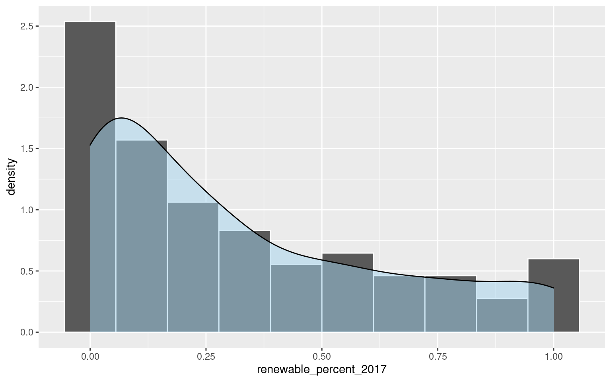 Based on the histogram of our response variable, renewable_percent_2017, we see that its probability distribution is heavily skewed right. Since the data is skewed, the best measure of the center of renewable_percent_2017 is the median. The right skew of the distribution means that it is more common for countries to have a lower renewable energy percentage (less than 50%). It is interesting to note that this probability seems to steadily decrease, increasing slightly at the tail end for 100% renewable energy production percentage.
Country Population, Land Area, and GDP Scatterplots
Logically, the three variables which seem to most obviously differentiate countries are: Country Population (X2017_Population_World_Bank), Country land area measured in \(km^2\) (X2017_Land_Area_km_2), and Country GDP measured in US dollars (X2017_GDP_US_Dollars_World_Bank). We would like to see if there is a direct correlation between these continuous variables and our response variable, renewable_percent_2017, by producing scatter plots with geom_point(). Initial plotting was difficult to make out since these variables are very large, thus we take a log transformation of these variables to properly scale them prior to making scatter plots. We use the ggplot2 package in order to create plots. Function geom_point() is used to make scatter plots.
# transform large variables to scale via log transformation
transform1 = subset_data %>%
mutate_at(.vars=c(2:4), .funs=log)
# scatter plot response vs Population
ggplot(data=transform1, mapping = aes(x=renewable_percent_2017, y=X2017_Population_World_Bank)) +
geom_point(color="deeppink1") +
geom_smooth(color="firebrick1")# scatter plot response vs Land Area
ggplot(data=transform1, mapping = aes(x=renewable_percent_2017, y=X2017_Land_Area_km_2)) +
geom_point(color="olivedrab3") +
geom_smooth(color="firebrick1")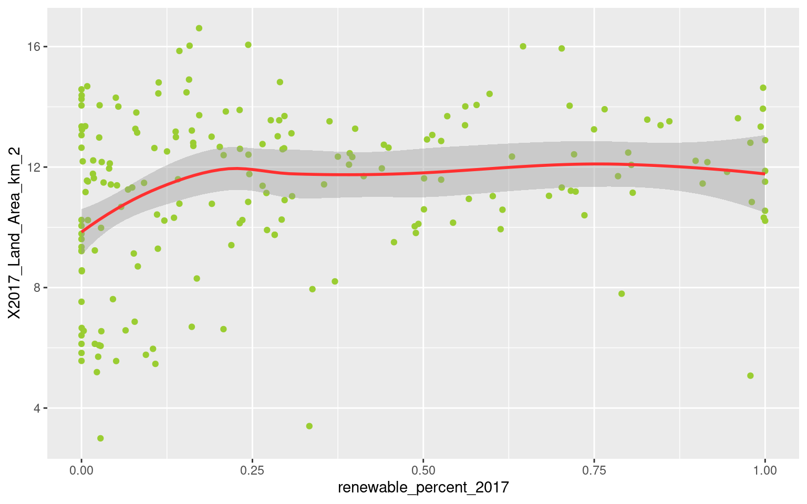
# scatter plot response vs GDP
ggplot(data=transform1, mapping = aes(x=renewable_percent_2017, y=X2017_GDP_US_Dollars_World_Bank)) +
geom_point(color="goldenrod2") +
geom_smooth(color="firebrick1")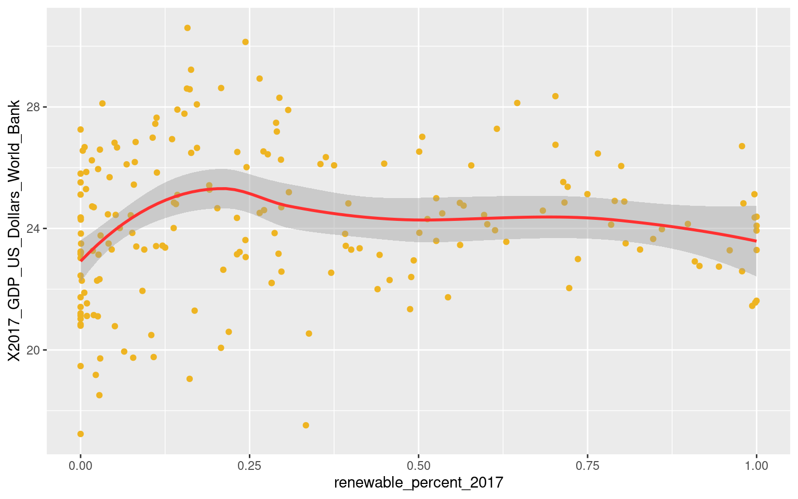 Based on our scatter plots of the three variables versus renewable energy percentage, we conclude that there is no significant correlation between renewable energy production percentage and a country's relative Population, GDP, or Land Area. Thus, we reject the notion that renewable energy percentage can be predicted based solely on these predictors. It is interesting to note that in each plot, there seems to be a slight positive correlation between renewable energy percentage and the three predictors of interest for countries with low renewable energy percentage (0% to 25%).
Emissions Variables Relationships (CH4, CO2, GHG, NOx)
Next, we would like to see if there exists any relation between emission output variables CH4, CO2, GHG, and NOx, and other predictors. Emissions signal mass production of energy, both harmful and natural. We hypothesize that such emissions could be related to the variables.
Upon plotting our data, we discovered that the emissions variables CH4, CO2, GHG, and NOx must be scaled in order to properly see relationships, as the values can be quite large. Thus, we decide to transform the emissions variables via a log transformation prior to making our plots.
Logically, we assume that a higher amount of emissions for each country would correspond with a larger populations. CH4 is methane, which is used to produce light and heat. Thus, a larger should result in greater CH4 outputs from human activity which produces light and heat. We will test this hypothesis by looking at the correlation between CH4 and Population:
transform2 = transform1 %>%
mutate_at(.vars=c(5:8), .funs=log)
# boxplot
ggplot(data=transform2, mapping = aes(x=X2017_Population_World_Bank, y=CH4)) +
geom_boxplot(mapping = aes(group = cut_width(X2017_Population_World_Bank, 3)),
color="deeppink1", fill="pink1", alpha=0.4)There appears to be a clear positive correlation between population and CH4 emission levels. This provides evidence that our hypothesis may about the variables relationship should be considered: larger populations result in higher levels of CH4 emissions. Note there do exist outliers for populations with smaller populations which output higher levels of CH4.
Next, we wish to check the relation between CO2 emissions and total energy supply (energy_supply_petajoules). CO2 emissions come from many sources, but human generation of energy (i.e. burning fossil fuels) is a huge source of contribution to CO2 emission levels. We suspect there may be a correlation between energy supply (from all sources, not just renewable) and CO2 emissions.
transform2 = transform2 %>%
mutate(energy_supply_petajoules = log(energy_supply_petajoules))
# boxplot
ggplot(data=transform2, mapping = aes(x=energy_supply_petajoules, y=CO2)) +
geom_boxplot(mapping = aes(group = cut_width(x=energy_supply_petajoules, 2)),
color="royalblue2", fill="lightskyblue2", alpha=0.5)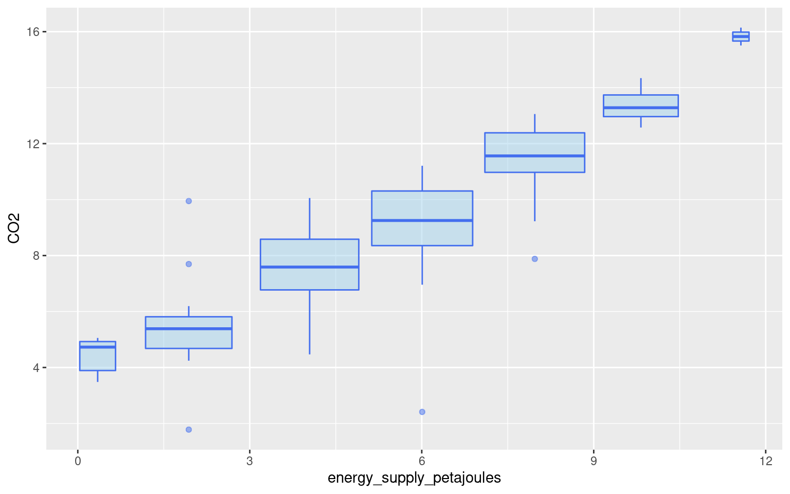 Based on our boxplot of energy_supply_petajoules vs CO2 emissions, it appears that there is a high correlation between these two variables. On average, larger supplies of energy correspond with rising levels of CO2 emissions. This is why it is important to increase percentages of renewable energy production, to limit the amount of CO2 generated by energy production.
Green house gases (GHG) are another emission variables, which we believe may be correlated with land area, since GHG are mainly produced by naturally occurring sources, it is logical to assume that larger land area (X2017_Land_Area_km_2) may mean more GHG emissions.
# boxplot
ggplot(data=transform2, mapping = aes(x=X2017_Land_Area_km_2, y=GHG)) +
geom_boxplot(mapping = aes(group = cut_width(X2017_Land_Area_km_2, 1)),
color="green4", fill="palegreen", alpha=0.3)Based on our plots, there seems to be some positive correlation between GHG and land area, but not as extreme a correlation as the previous emission relationships which we observed.
Nitrogen Oxide (NOx) is our final emission variable to examine. Nitrogen Oxide are harmful gases which are produced via burning fuel at high temperatures. Human activities such as construction and driving contribute to NOx emissions. Thus, we will venture to explore the relationship between GDP (X2017_GDP_US_Dollars_World_Bank) and NOx. We suspect there may exist a relationship since GDP corresponds to the value of goods produced/consumed in a country. A higher GDP should equate to higher production and consumption levels of goods, which we believe would increase NOx levels.
# boxplot
ggplot(data=transform2, mapping = aes(x=X2017_GDP_US_Dollars_World_Bank, y=NOx)) +
geom_boxplot(mapping = aes(group = cut_width(X2017_GDP_US_Dollars_World_Bank, 1)),
color="goldenrod3", fill="lightgoldenrod3", alpha=0.4) Looking at the resulting boxplot, there appears to be some positive correlation between GDP and NOx emissions, which begins to plateau as GDP increases. But we must note that there exist a number of outliers which may influence these results.
Suspected Confounding Land Variables
We suspect that Land Area measured in \(km^{2}\) (X2017_Land_Area_km_2) and Forest area (forest_area_2015), may be confounding variables since forest area would be a subset of total land area, thus we make a correlation graph between the two continuous variables. In order to properly view our data in the correlation graph, we must preform log transformation on both variables in order to properly scale the data.
ggplot(data=model_data, mapping = aes(x= log(X2017_Land_Area_km_2), y = log(forest_area_2015))) +
geom_point(color="olivedrab3") +
geom_smooth(color="firebrick1")## `geom_smooth()` using method = 'loess' and formula 'y ~ x'## Warning: Removed 2 rows containing non-finite values (stat_smooth).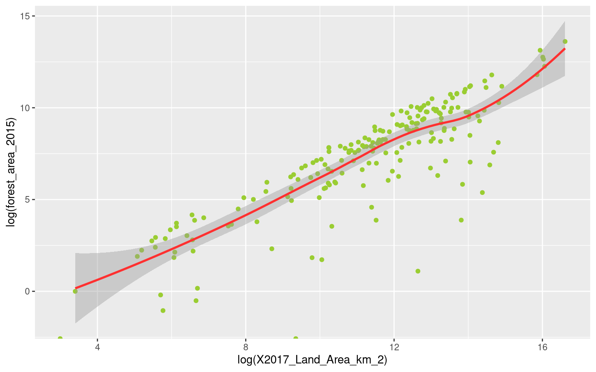 Based on the correlation graph, X2017_Land_Area_km_2 and forest_area_2015 exhibit linear behavior. Thus, there is a high positive correlation between these variables.
Paris Climate Agreement
Finally we wish to acknowledge variables which represent the year that a Country officially formalized their participation in a selection of environmental international treaties and conventions. These predictor variables may be of importance because they indicate the Country's desire to pursue measures to mitigate climate change. We hypothesize that an earlier year of formalizing participation in such conventions and treaties would result in a decrease in harmful environmental activities. We assume that countries who formalize their participation observe the importance of transitioning off of fossil fuels decreasing harmful emissions, and begin their transition sooner than other countries. We check if there exists a relationship between one of the most well-known Climate agreements, The Paris Climate Accord (Paris_Agreement), and a harmful environmental activity mining (mining_value_2017).
ggplot(data=transform2, mapping = aes(x=Paris_Agreement, y=mining_value_2017)) +
geom_boxplot(mapping = aes(group = cut_width(Paris_Agreement, 2)),
color="mediumorchid4", fill="plum3", alpha=0.4)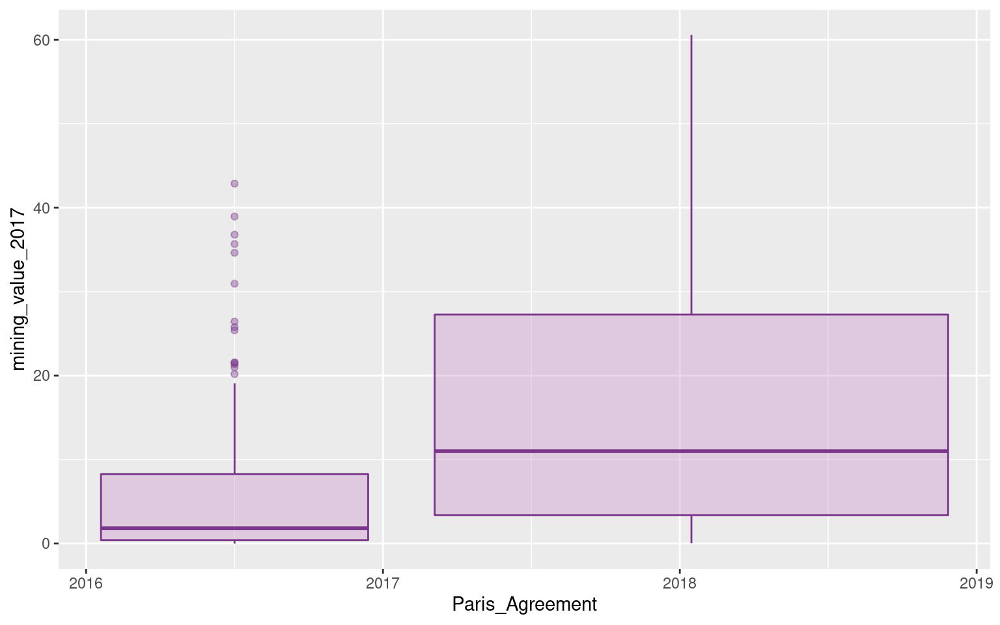 Based on our boxplot, there appears to be a relationship between Paris_Agreement and mining_value_2017. It appears that countries who joined the Paris Agreement earlier tend to have a lower mining value on average. This is consistent with the idea that countries' participation in treaties and conventions may be an indication of their willingness to rely on renewable energy sources.
Training and Test Data
The cleaned data is divided into test and training data. The testing data is used to evaluate the performance of the predictive model. Using a seperate set of data forces the model to perform on new values, as if it were predicting observations that had not been recorded. This process simulates what would occur if new observations were trying to be predicted (new countries came into being) or perhaps could be used to predict renewable energy percentages in future years. The test data is used to calculate RMSE and MAE.
The training data is used to fit the model. The training data is additionally used to calculate bias.
The test-training data split for this model was decided as \(80\%\) training and \(20\%\). Given there are only 195 observations available after the data cleaning process, it is important to have enough data to train a robust model. Assigning \(20\%\) of the data allows for 39 observations to be in the test set. This is enough that outliers should not seriously impact the results without limiting the training data set size more than necesary. Although not the main reason for the decided split, 39 observations allows for easy graphing of the predictions versus the actual reported value.
Along with test and training data, there is a need for validation data. The purpose of validation data is to get estimates of the test error while still fitting the model parameters (the test data is reserved for the final model). In this project cross validation (CV) is used where possible. Cross validation is the process of breaking the training data into "folds." The for the \(kth\) fold, the other folds are treated as training data to fit the model, and the \(kth\) fold is treated as test data to get the CV error. Generally the reported CV error is the average over the \(k\) folds. For example, if 10 fold cross validation is used, then the training data will be split into 10 parts, and will fill be fit 10 times. The CV error for the model will be the average of the 10 test errors. The value of cross validation is that it allows for all the training data to be used in model fitting.
Below the data is broken into test and training data randomly.
## Load the Data from the 02 File
load(file="Intermediate_Data/03_model_data.Rdata")
# Set Seed for Reproducibility
set.seed(42)
# training set 80% of original data
train = sample(nrow(model_data), .8*(nrow(model_data)))
x.train = model_data[train, ]
y.train = model_data[train, ]$renewable_percent_2017
# test set remaining 20% of original data
x.test = model_data[-train, ]
y.test = model_data[-train, ]$renewable_percent_2017No stratification is employed in splitting the test and training data. Stratified sampling is a method for sampling randomly while ensuring certain categories of observations are present at specified levels in the training or test data. For example, the training data might be sampled so that there are equal percentages of high and low population countries in the test and training data.
Stratification can be useful in sampling, but there needs to be some justification for limiting the randomness of the sample. The most obvious choices for potential stratification are the major demographics for countries: population, land area, and GDP. If there were some obvious relationship between renewable percentage and these factors, then it would make sense to make sure the test and training data sets had equal proportions of different bins (since the variables are all continuous) of these variables. In the exploratory data analysis section, scatter plots between the demographic variables and renewable energy percentage indicated no relationship between them. Therefore there is no justification for stratifying the samples based on any of these variables.
# Histogram of training renewable energy
y.train.df = data.frame(y = y.train)
y.train_hist = ggplot(data = y.train.df, aes(x = y)) +
geom_histogram(alpha = 0.5, binwidth = .1) +
labs(x = "Renewable Energy Percentage", y = "Count",
title = "y.train histogram") +
theme(text = element_text(size = 20),
axis.text.y = element_text(angle=90, hjust=1, size = 10),
axis.text.x = element_text(size = 10),
plot.title = element_text(hjust = 0.5, size = 12),
axis.title=element_text(size=10,face="bold")) +
theme_minimal()
# Histogram of test renewable energy
y.test.df = data.frame(y = y.test)
y.test_hist = ggplot(data = y.test.df, aes(x = y)) +
geom_histogram(alpha = 0.5, binwidth = .1) +
labs(x = "Renewable Energy Percentage", y = "Count",
title = "y.test histogram") +
theme(text = element_text(size = 20),
axis.text.y = element_text(angle=90, hjust=1, size = 10),
axis.text.x = element_text(size = 10),
plot.title = element_text(hjust = 0.5, size = 12),
axis.title=element_text(size=10,face="bold")) +
theme_minimal()
# Plot Side by side
plot_grid(y.train_hist,y.test_hist,ncol = 2)remove(y.train.df,y.train_hist,y.test.df,y.test_hist)Plots of the histograms for y.train and y.test indicate that the distributions of renewable energy percentage are roughly the same between the training and test data. There is no reasoning to support stratification here, and therefore the random sampling is sufficient for the remainder of the report.
Model 1: Regularized Linear Model
The first model considered is a linear regression model. Since our response variable, renewable_percent_2017, is a quantitative variable, linear regression could be a good model for our data, under the following assumptions: there is a linear relationship between response and the predictors, errors of the model are i.i.d. normal random errors, and all observations follow this model. Since we have a relatively large number of predictors (30) relative to observations (195), the variance of our model may be quite large. Thus, to increase our prediction accuracy, we choose to use regularization methods in order to significantly reduce variance while only slightly increasing bias, leading to an overall decrease in MSE. In other words, regularization prevents overfitting. Regularization methods work by shrinking the coefficients of irrelevant variables for prediction accuracy towards zero. In selecting the most accurate linear regression model, we will preform both ridge regression and lasso regression. The main difference between these two methods is that ridge regularization can shrink estimates close to zero, whereas lasso regularization can shrink estimates to zero.
To create our regularized regression models, we use the function glmnet(). Generally we want to standardize data prior to regularization, but glmnet() automatically scales variables. The function takes the arguments alpha which determines fit, and lambda determines the penalty applied to the norm of the coefficients, resulting in different model coefficients (and in turn models) depending on the lambda parameter specified.
We begin by subsetting the data to exclude the variables Country_Final and Country_ID_Final, as the values of these variables are means of identifying observations, not values which should influence our model.
# Subset of Data Excluding first three variables and duplicate variable
x.train_r = x.train[,4:34]
x.train_r = x.train_r %>%
select(-energy_supply_2017)
x.test_r = x.test[,4:34]
x.test_r = x.test_r %>%
select(-energy_supply_2017)Ridge Regression Model
First we will apply the ridge regression regularization method in order to predict renewable_percent_2017 using all other variables as predictors.
To initialize ridge regularization, we use the function glmnet() with argument alpha=0 to specify a ridge regression model fit to our training data. We implement the function over a full range of possible lambda values, since this is the parameter which must be tuned to determine our optimal ridge model. We plot the standardized coefficients for ridge regression with respect to the range of possible lambdas.
# vector of 100 possible lambda parameter values
lambda.list.ridge = 1000*exp(seq(0, log(1e-5), length = 100))
# Fit ridge regression model to training set, with lambda parameter left to tune
ridge.mod = glmnet(x.train_r, y.train, alpha=0, lambda = lambda.list.ridge)
# plot standardized coefficients vs lambda values
plot(ridge.mod, xvar="lambda", label=TRUE)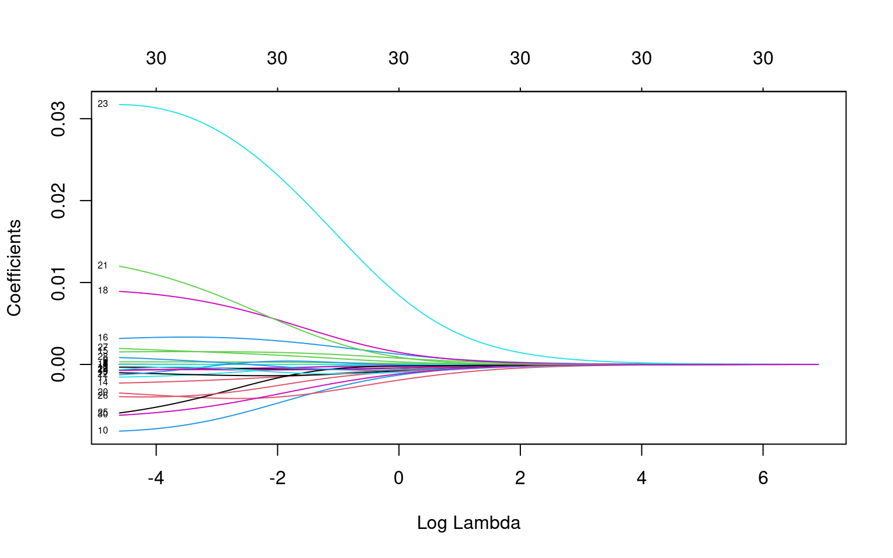 We see that depending on the choice of penalty parameter lambda, coefficients of the ridge regression model are regularized towards zero. Our goal in creating the optimal ridge regression model is to find the optimal value of lambda which produces coefficients which minimize MSE.
We use cross validation to fold the training set into 10 folds (using k-fold CV function as defined in Homework 2 of PSTAT 131/231). For each fold of the training data, we preform additional 5-fold CV via the cv.glmnet() function to find the optimal value of lambda and resulting MSE for the corresponding validation sets.
# Create Model Matrix of the Training Data
data.train = model.matrix(y.train ~ . , x.train_r)
# k-fold CV function
do.chunk.ridge <- function(chunkid, folddef, dat, ...){
# get training index
train_id = (folddef != chunkid)
# training set
dat.train.x = dat[train_id, ]
dat.train.y = x.train[train_id, ]$renewable_percent_2017
# validation set
dat.val.x = dat[-train_id, ]
dat.val.y = x.train[-train_id, ]$renewable_percent_2017
# vector possible lambda values
lambda.list.ridge = 1000 * exp(seq(0, log(1e-5), length = 100))
# train ridge regression model on training data
fit.ridge.train <- glmnet(dat.train.x, dat.train.y, alpha=0, lambda = lambda.list.ridge)
# 5-fold CV for optimal lambda
cv.out.ridge = cv.glmnet(dat.train.x, dat.train.y, alpha=0, folds=5)
bestlam.r = cv.out.ridge$lambda.min
# get predicted value on validation set
pred.ridge.val = predict(fit.ridge.train, s=bestlam.r, newx=dat.val.x)
# create data frame of validation errors
data.frame(fold = chunkid,
bestlam.r = cv.out.ridge$lambda.min,
val.MSE = mean((pred.ridge.val - dat.val.y)^2),
val.RMSE = sqrt(mean((pred.ridge.val - dat.val.y)^2)),
val.MAE = mean(abs(dat.val.y-pred.ridge.val)))
}
set.seed(42)
# set k-fold to 10
nfold=10
# create folds
folds = cut(1:nrow(x.train_r), breaks=nfold, labels=FALSE) %>% sample()
# set vector to save validation error
error.folds.r = NULL
# perform 10-fold CV
for (i in 1:10){
CV.r = do.chunk.ridge(chunkid=i, folddef=folds, dat=data.train)
error.folds.r = rbind(error.folds.r, CV.r)
}
print(error.folds.r)## fold bestlam.r val.MSE val.RMSE val.MAE
## 1 1 0.6398175 0.08962297 0.2993710 0.2452304
## 2 2 0.3526219 0.08525976 0.2919927 0.2385031
## 3 3 0.6002626 0.08916286 0.2986015 0.2457503
## 4 4 0.4904988 0.08715632 0.2952225 0.2435911
## 5 5 0.6005164 0.08892810 0.2982082 0.2452313
## 6 6 0.6455729 0.08868690 0.2978035 0.2471815
## 7 7 0.5512022 0.08755098 0.2958901 0.2450884
## 8 8 0.7251541 0.09028399 0.3004729 0.2471655
## 9 9 1.4423725 0.09328741 0.3054299 0.2555555
## 10 10 0.8119056 0.09028307 0.3004714 0.2473334optimal_lam_r1 = error.folds.r[2,]$bestlam.rBased on the 10 folds of our training data, we see training fold 2 resulted in lowest validation MSE, indicating it's corresponding lambda = 0.3526219 may be our optimal penalty parameter.
We compare this lambda value selected from the folded training set, to the optimal lambda chosen by preforming 10-fold cross-validation on the entire training set, simply using the function cv.glment(). The plot of lambda values and corresponding MSEs is produced.
set.seed(42)
# 5-fold CV
cv.out.ridge = cv.glmnet(as.matrix(x.train_r), y.train, alpha=0, folds=10)
plot(cv.out.ridge)
abline(v = log(cv.out.ridge$lambda.min), col="springgreen4", lwd=3, lty=2)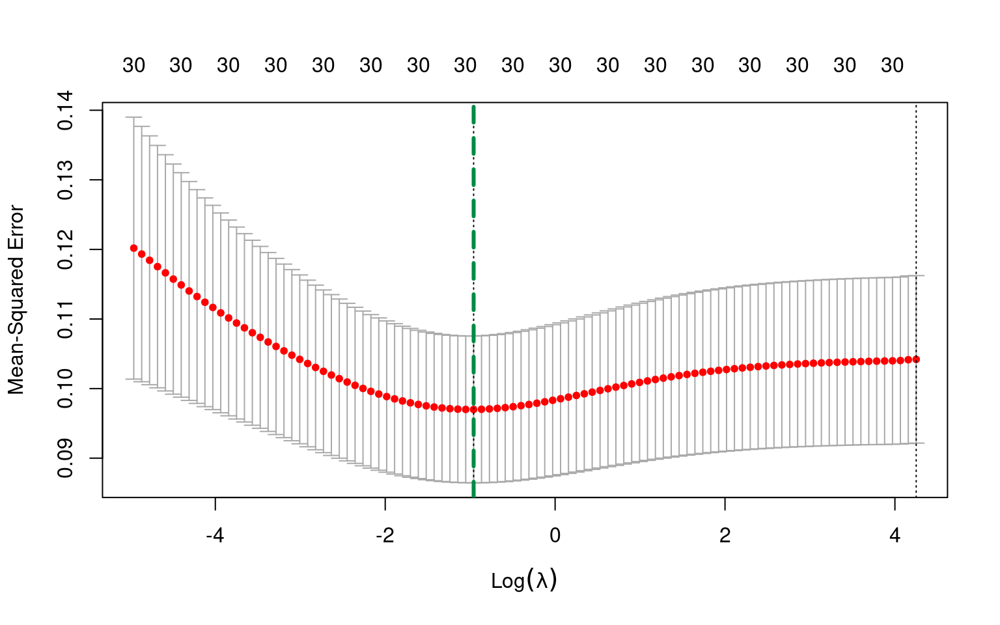
# optimal lambda
optimal_lam_r2 = cv.out.ridge$lambda.minAccording to 10-fold CV preformed on the entire training set, the optimal value of tuning parameter lambda for our ridge regression model is 0.3831554.
In order to choose which lambda value to use for our optimal ridge regression model, we fit two ridge regression models to our original training set for both values of lambda. Fit one is ridge.mod1 with lambda =0.3526219 and Fit two is ridge.mod2 with lambda = 0.3831554.
# fit ridge model 1
ridge.mod1 = glmnet(x.train_r, y.train, alpha=0, lambda = optimal_lam_r1)
ridge.train.pred1 = predict(ridge.mod1, s=optimal_lam_r1, newx=as.matrix(x.train_r))
ridge.train.MSE1 = mean((ridge.train.pred1- y.train)^2)
# fir ridge model 2
ridge.mod2 = glmnet(x.train_r, y.train, alpha=0, lambda = optimal_lam_r2)
ridge.train.pred2 = predict(ridge.mod2, s=optimal_lam_r2, newx=as.matrix(x.train_r))
ridge.train.MSE2 = mean((ridge.train.pred2- y.train)^2)Based on the predictions of the two ridge models, we see that ridge.mod1 with lambda=0.3526219 results in a slightly lower training MSE 0.0854779, compared to training MSE 0.0859003 from ridge.mod2 with lambda=0.3831554. This means that ridge.mod1 is slightly better fit to the training data.
Thus, we choose tuning parameter 0.3526219 to be the optimal lambda value to build our final ridge regression model.
The coefficients for our optimally tuned ridge regression model are the following:
ridge.coeff = predict(ridge.mod1, type="coefficients", s=optimal_lam_r1)
ridge.coeff## 31 x 1 sparse Matrix of class "dgCMatrix"
## s1
## (Intercept) -2.375638e+01
## X2017_Population_World_Bank -1.366013e-11
## X2017_Land_Area_km_2 2.381776e-10
## X2017_GDP_US_Dollars_World_Bank -3.597440e-15
## CH4 6.303870e-08
## CO2 -5.343251e-09
## GHG -3.933385e-09
## NOx -5.224696e-07
## energy_supply_petajoules -6.749912e-07
## energy_intensity_2017 2.067023e-04
## mining_value_2017 -2.791330e-03
## percent_land_agricultural_2013 -1.795839e-04
## nitrogen_consumption -2.654672e-04
## phosphate_consumption -5.898271e-04
## potash_consumption -1.092926e-03
## terrestrial_protected_areas 1.207879e-03
## protected_areas_marine_terrestrial 2.152776e-03
## forest_area_2015 1.305999e-07
## Basel_Convention 3.294170e-03
## CITES -1.182939e-03
## Convention_on_Biological_Diversity -3.133680e-03
## Kyoto__Protocol 2.663360e-03
## Montreal_Protocol 2.440820e-04
## Paris_Agreement 1.596983e-02
## Ramsar_Convention -5.824358e-04
## Rotterdam_Convention -5.231041e-04
## Stockholm_Convention -1.554240e-03
## UN_Convention_on_the_Law_of_the_Sea 7.262177e-04
## UN_Convention_to_Combat_Desertification -6.290405e-04
## UN_Framework_Convention_on_Climate_Change -1.151523e-03
## World__Heritage_Convention -2.270027e-03Our final ridge regression model has 30 coefficient estimates, some of these coefficient estimates appear to be very close to zero, but none are exactly zero.
We now compute the training MSE, Bias and test MSE for our optimal ridge regression model:
# final ridge training MSE
ridge.train.pred = predict(ridge.mod1, s=optimal_lam_r1, newx=as.matrix(x.train_r))
ridge.train.MSE = mean((ridge.train.pred - y.train)^2)
ridge.bias = mean(ridge.train.pred-y.train)
# final ridge test MSE
ridge.test.pred = predict(ridge.mod1, s=optimal_lam_r1, newx=as.matrix(x.test_r))
ridge.test.MSE = mean((ridge.test.pred - y.test)^2)Our final ridge regression model based on the coefficient estimates produced by our optimally tuned lambda results in:
Training MSE: 0.0854779
Bias: 1.144362610^{-14}
Test MSE 0.0730677
The test MSE is relatively lower than the training MSE, although both are relatively close to zero. Although bias of the model is very close to 0, the lower test MSE is promising and signals that our model preforms well on the test set.
Lasso Regression Model
We will now apply the lasso regularization method in order to predict renewable_percent_2017 using all other variables as predictors.
To begin lasso regularization, we proceed in the same manner as ridge regularization, using the function glmnet() implemented over a full range of possible lambda parameters. The only difference occurs for the argument alpha, which we must set to alpha=1 to specify a lasso regression model. We plot the standardized coefficients versus the range of possible lambda values.
set.seed(42)
# vector of 100 possible lambda parameter values
lambda.list.lasso = 2 * exp(seq(0, log(1e-4), length=100))
# fit lasso regression model to training set, with lambda parameter left to tune
lasso.mod <- glmnet(x.train_r, y.train, alpha=1, lambda=lambda.list.lasso)
# plot standardized coefficients vs lambda values
plot(lasso.mod, xvar="lambda", label=TRUE)We see that as penalty parameter lambda increases, normalized coefficients of the lasso regression model are regularized down towards zero, eventually all becoming zero. Our goal in creating the optimal lasso regression model is to find the optimal value of lambda which produces coefficients that minimize prediction error.
Again, we use cross validation to fold the training set into 10 folds as we did for ridge regression. For each fold of the training data, we preform additional 5-fold CV via the cv.glmnet() to find the optimal value of lambda and resulting MSE for the corresponding validation sets.
# design matrix of training data with response variable renewable_percent_2017
data.train <- model.matrix(y.train ~ . , x.train_r)
# k-fold CV function
do.chunk.lasso <- function(chunkid, folddef, dat, ...){
# get training index
train_id = (folddef != chunkid)
# training set
dat.train.x = dat[train_id, ]
dat.train.y = x.train[train_id, ]$renewable_percent_2017
# validation set
dat.val.x = dat[-train_id, ]
dat.val.y = x.train[-train_id, ]$renewable_percent_2017
# vector possible lambda values
lambda.list.lasso = 2 * exp(seq(0, log(1e-4), length=100))
# train ridge regression model on training data
fit.lasso.train <- glmnet(dat.train.x, dat.train.y, alpha=1, lambda = lambda.list.lasso)
# 5-fold CV for optimal lambda
cv.out.lasso = cv.glmnet(dat.train.x, dat.train.y, alpha=1, folds=5)
bestlam.l = cv.out.lasso$lambda.min
# get predicted value on validation set
pred.lasso.val = predict(fit.lasso.train, s=bestlam.l, newx=dat.val.x)
# create data frame of validation errors
data.frame(fold = chunkid,
bestlam.l = cv.out.lasso$lambda.min,
val.MSE = mean((pred.lasso.val - dat.val.y)^2),
val.RMSE = sqrt(mean((pred.lasso.val - dat.val.y)^2)),
val.MAE = mean(abs(dat.val.y-pred.lasso.val)))
}
set.seed(42)
# set k-fold to 10
nfold=10
# create folds
folds = cut(1:nrow(x.train), breaks=nfold, labels=FALSE) %>% sample()
# set vector to save validation error
error.folds.l = NULL
# perform 10-fold CV
for (i in 1:10){
CV.l = do.chunk.lasso(chunkid=i, folddef=folds, dat=data.train)
error.folds.l = rbind(error.folds.l, CV.l)
}
error.folds.l## fold bestlam.l val.MSE val.RMSE val.MAE
## 1 1 0.02408872 0.08858705 0.2976358 0.2417101
## 2 2 0.02546215 0.08706921 0.2950749 0.2424435
## 3 3 0.03278801 0.09294626 0.3048709 0.2528776
## 4 4 0.01846696 0.08485896 0.2913056 0.2371207
## 5 5 0.02260906 0.08728146 0.2954344 0.2410386
## 6 6 0.03213032 0.09094822 0.3015762 0.2526880
## 7 7 0.02743346 0.08862816 0.2977048 0.2492288
## 8 8 0.04347185 0.09691263 0.3113079 0.2590350
## 9 9 0.04508447 0.09613667 0.3100591 0.2609295
## 10 10 0.02785217 0.08931486 0.2988559 0.2464851optimal_lam_l1 = error.folds.l[4,]$bestlam.lBased on the 10 folds of our training data, we see training fold 4 resulted in lowest validation MSE, indicating it's corresponding lambda = 0.018467 may be our optimal penalty parameter.
We compare this lambda value selected from the folded training sets, to the optimal lambda chosen by preforming 10-fold cross-validation on the entire training set, simply using the function cv.glment(). The plot of lambda values and corresponding MSEs is produced.
set.seed(42)
# 10-fold CV on training set
cv.out.lasso = cv.glmnet(as.matrix(x.train_r), y.train, alpha=1, folds=10)
plot(cv.out.lasso)
abline(v = log(cv.out.lasso$lambda.min), col="springgreen4", lwd=3, lty=2)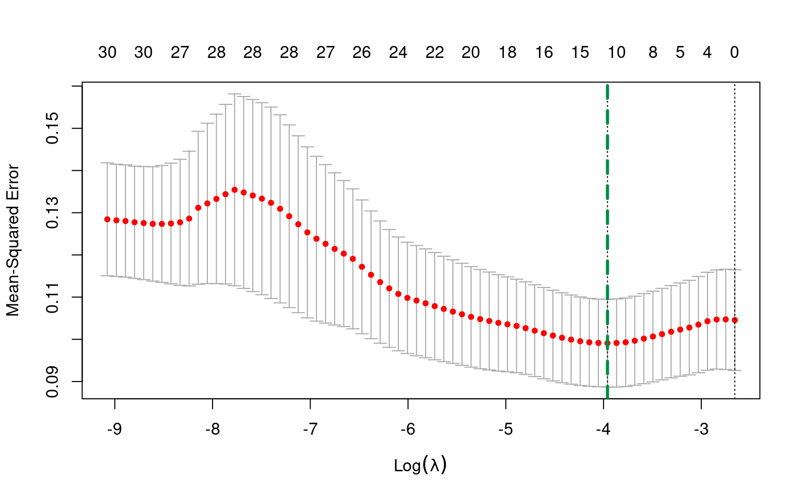
# optimal lambda
optimal_lam_l2 = cv.out.lasso$lambda.minThe optimal lambda parameter selected for our lasso model by preforming 10-fold CV on our entire training set is 0.0190697.
In order to choose which tuning parameter lambda to use for our optimal lasso regression model, we fit two lasso models to our original training set for both values of lambda.
Fit one is lasso.mod1 with lambda =0.018467.
Fit two is lasso.mod2 with lambda = 0.0190697.
In order to choose which tuning parameter lambda to use for our optimal lasso regression model, we fit two lasso models to our original training set for both values of lambda. Fit one is lasso.mod1 with lambda =0.018467.and Fit two is lasso.mod2 with lambda = 0.0190697.
# fit lasso model 1
lasso.mod1 = glmnet(x.train_r, y.train, alpha=1, lambda = optimal_lam_l1)
lasso.train.pred1 = predict(lasso.mod1, s=optimal_lam_l1, newx=as.matrix(x.train_r))
lasso.train.MSE1 = mean((lasso.train.pred1- y.train)^2)
# fit lasso model 2
lasso.mod2 = glmnet(x.train_r, y.train, alpha=1, lambda = optimal_lam_l2)
lasso.train.pred2 = predict(lasso.mod2, s=optimal_lam_l2, newx=as.matrix(x.train_r))
lasso.train.MSE2 = mean((lasso.train.pred2- y.train)^2)Based on the predictions of the two lasso models, we see that lasso.mod1 with lambda=0.018467 results in a slightly lower training MSE 0.0851577, compared to training MSE 0.0853861 from lasso.mod2 with lambda=0.0190697. This means that lasso.mod1 is slightly better fit to the training data.
Thus, we choose tuning parameter 0.018467 to be the optimal lambda value to build our final lasso regression model.
The coefficients for our optimally tuned lasso regression model are the following:
lasso.coeff = predict(lasso.mod1, type="coefficients", s=optimal_lam_l1)
lasso.coeff## 31 x 1 sparse Matrix of class "dgCMatrix"
## s1
## (Intercept) -2.213697e+01
## X2017_Population_World_Bank .
## X2017_Land_Area_km_2 .
## X2017_GDP_US_Dollars_World_Bank .
## CH4 .
## CO2 .
## GHG .
## NOx .
## energy_supply_petajoules -5.914094e-07
## energy_intensity_2017 1.963007e-04
## mining_value_2017 -4.306229e-03
## percent_land_agricultural_2013 .
## nitrogen_consumption -3.237467e-04
## phosphate_consumption .
## potash_consumption -1.416006e-03
## terrestrial_protected_areas .
## protected_areas_marine_terrestrial 4.087703e-03
## forest_area_2015 .
## Basel_Convention 4.344094e-03
## CITES -8.495200e-04
## Convention_on_Biological_Diversity -4.467387e-04
## Kyoto__Protocol .
## Montreal_Protocol .
## Paris_Agreement 1.150050e-02
## Ramsar_Convention .
## Rotterdam_Convention .
## Stockholm_Convention .
## UN_Convention_on_the_Law_of_the_Sea .
## UN_Convention_to_Combat_Desertification .
## UN_Framework_Convention_on_Climate_Change .
## World__Heritage_Convention -3.446906e-03Our final lasso model has 19 out of 30 coefficients set to zero. The lasso model is more sparse compared to the ridge regression model, this could be advantageous in our prediction and analysis.
We now compute the training MSE and test MSE for our optimal lasso regression model:
# training MSE
lasso.train.pred = predict(lasso.mod1, s=optimal_lam_l1, newx=as.matrix(x.train_r))
lasso.train.MSE = mean((lasso.train.pred - y.train)^2)
lasso.bias = mean(lasso.train.pred-y.train)
# test MSE
lasso.test.pred = predict(lasso.mod1, s=optimal_lam_l1, newx=as.matrix(x.test_r))
lasso.test.MSE = mean((lasso.test.pred - y.test)^2)Our final lasso model results in:
Training MSE: 0.0851577
Bias: 9.775719310^{-15}
Test MSE: 0.0757953
The training MSE is higher than the test MSE for our lasso model, meaning that our model preforms better on the test data than the data which it was fit to, which is positive because it signals that our lasso model is not overfit to the training data (even though bias is zero)
Our final lasso model results in training MSE 0.0851577, and test MSE 0.0757953. The training MSE is higher than the test MSE for our lasso model, meaning that our model preforms better on the test data than the data which it was fit to, which is positive because it signals that our lasso model is not overfit to the training data.
Optimal Regression Model
Now that we have selected two final regression models found via regularization methods, ridge and lasso, we compare the models to choose our optimal linear regression model. Compute test mean square errors:
# mse for ridge model on test data
ridge.test.pred = predict(ridge.mod1, s=optimal_lam_r1, newx=as.matrix(x.test_r))
MSE.r = mean((ridge.test.pred - y.test)^2)
# mse for lasso model on test data
lasso.test.pred = predict(lasso.mod1, s=optimal_lam_l1, newx=as.matrix(x.test_r))
MSE.l = mean((lasso.test.pred - y.test)^2)Compute test root mean square errors:
# root mse for ridge model on test data
RMSE.r = sqrt(ridge.test.MSE)
# root mse for lasso model on test data
RMSE.l = sqrt(lasso.test.MSE)Compute test root mean absolute errors:
# mean absolute error for ridge model on test data
MAE.r = mean(abs(y.test-ridge.test.pred))
# mean absolute error for lasso model on test data
MAE.l = mean(abs(y.test-lasso.test.pred))Based on our evaluations of different metrics of accuracy, we see that both our final ridge and lasso regression models preform very closely on the test data. Our ridge model preforms slightly better on the test set measured on all metrics of accuracy.
Our final ridge model has test errors: MSE 0.0730677, RMSE 0.2703104, and MAE 0.2224853
Our final lasso model has test errors: MSE 0.0757953, RMSE 0.2753095, and MAE 0.2216202
Based on our evaluations of different metrics of accuracy, we see that both our final ridge and lasso regression models preform very closely on the test data. Our ridge model preforms slightly better on the test set measured on all metrics of accuracy. Our final ridge model has test errors: MSE 0.0730677, RMSE 0.2703104, and MAE 0.2224853. Our final lasso model has test errors: MSE 0.0757953, RMSE 0.2753095, and MAE 0.2216202
Since our lasso model uses significantly less predictors in its model (11 compared to 30), and has test MAE almost identical compared to the ridge model, it would be advantageous to use the lasso model in this setting, since we gain interpretability with much loss of accuracy. Thus, our optimal linear regression model chosen via regularization methods is the lasso model.
Finally, we plot the predictions for our lasso model on the test set versus the actual values in order to visualize how well our model preformed.
lasso.test.pred = predict(lasso.mod1, s=optimal_lam_l1, newx=as.matrix(x.test_r))
# Create Data Frame with Countries, Predicted Values And Actual Values
lasso_predict_graph_data = data.frame(observation = c(1:39),
s1 = lasso.test.pred,
actual = y.test,
Country = x.test$Country_Final)
# Specifiy minimum and maxium in each case for plotting
# the line between points
lasso_predict_graph_data = lasso_predict_graph_data %>%
mutate(min_value_col = pmin(s1,actual)) %>%
mutate(max_value_col = pmax(s1,actual)) %>%
mutate(Abs_Diff = abs(actual-s1))
# Plot the Predictions vs. Actual with difference lines and labels
ggplot(data = lasso_predict_graph_data, aes(x = observation, label = Country)) +
geom_point(aes(y = s1, color = 'Predicted')) +
geom_point(aes(y = actual, color='Actual')) +
geom_linerange(aes(ymin = min_value_col, ymax = max_value_col),
col = "blue", linetype = "dashed", alpha = .5) +
geom_text(aes(y = actual), size = 2, vjust = -.5) +
labs(title = "Test Dataset Results for Lasso Regression Model",
x="Country",y="Renewable Energy 2017 (%)") +
scale_color_manual(name='Renewable % 2017',
breaks=c('Actual', 'Predicted'),
values=c('Actual'='black', 'Predicted'='red')) +
theme(legend.title=element_text(size=20), legend.text=element_text(size=14)) +
theme_minimal()It is clear that our lasso model struggles to predict renewable energy percentage for countries which have relatively high renewable energy percentages (above 50%) as well as countries with low renewable energy percentages close to zero. Our lasso models' prediction values primarily fall between 10% and 50%, which poses a challenge in prediction since we hope to accurately predict the full range of renewable percentages.
Model 2: Regularized Beta Regression Model
When fitting a linear model for prediction (or inference), the "ordinary linear regression" is considered one of the simplest and first choices for modeling a continuous response. Such a model is not always appropriate. The linear model estimates the response directly as a linear combination of the \(\mathbf{\beta}\) matrix and \(\mathbf{X}\) matrices, with an error matrix as well. This is of the form:
\[ \mathbf{Y} = \mathbf{X}\mathbf{\beta} + \mathbf{\epsilon}\]
where \(\mathbf{Y}\) and \(\mathbf{\epsilon}\) are \(n\times 1\) matrices, \(\mathbf{X}\) is a \(n\times p\) matrix, and \(\mathbf{\beta}\) is a \(p\times 1\) matrix. The \(\beta\) coefficients are fit via least squares estimates, and the residuals can be analyzed for normality. Such a model assumes additive error. Additionally, it is generally desirable for the errors to be normally distributed for inference purposes, although it is not strictly necessary for estimating the coefficients.
Practically, issues with the additive error term become apparent when considering what constraints may be appropriate for \(\mathbf{Y}\). For renewable energy percentages, the model should be limited to fitting response values between 0 and 1. The simple linear model does not guarentee this: coefficients could be estimated that result in response values less than 0 or greater than 1. Generalized linear models are the solution to this problem. The genearlized linear model allows for the \(\mathbf{X}\mathbf{\beta}\) matrix (called the systematic component - this portion must be linear in the \(\beta's\)) to be related to the response via a link function, and incorporates the error into a "random" component.
The choice of generalized linear model (GLM) depends on what type of values the response should take. Logistic regression (technically bernoulli regression) is a form of GLM that applies for binary responses, and uses the logit link function. In this problem, the response is continous. When applying linear models to proportions, it is important to distinguish between the response being counts divided by a total, or inherently proportional. If the response is a form of counts, then binomial regression (bernoulli regression but \(n\) does not have to equal 1) or poisson regression are usually appropriate starting places. Energy is measured as a continuous value, and not a discrete count. Therefore, the less common beta regression model is the most appropriate GLM here (Mangiafico 2016).
A beta regression model assumes the response variable follows a beta distribution.1 It also requires the response variable to be between 0 and 1, but not exactly 0 or 1. This is a problem given the renewable energy data set, as a few renewable percentages are 0 or 1. In order to make use of the model in spite of this, a small ammount of bias is introduced to the model by setting values from the training set that are 0 equal to 0.000001 and values that are 1 equal to 0.999999.
\[g(\mu_i) = \mathbf{X\beta}\]
The model for a beta regression is above. The mean percentage, \(\mu\) accounts for the randomness and is modeled as a function of the systematic component, \(\mathbf{X\beta}\). \(g(.)\) is the link function (Cribari-Neto and Zeileis, n.d.). Different link functions are possible, but the typical method for beta regression is the logit function, \(g(\mu) = log(\frac{\mu}{1-\mu})\). This results in the model
\[log\bigg(\frac{\mu_i}{1-\mu_i}\bigg) = \mathbf{X\beta}\]
This looks similar logistic (bernoulli) regression. However the beta regression model incorporates a second parameter as well; the precision \(\phi\), sometimes referred to as the dispersion, \(\phi^{-1}\). The precision can be constant or modeled (Cribari-Neto and Zeileis, n.d.). In the package used in this project the dispersion is fit using a logit link as well and is estimated to be approximately 1, see below.
There is a computation problem related to fitting a beta regression model in R. Fitting this model is generally done using the betareg package. This report seeks to fit sparse models using some form of regularization, since there are approximately 30 predictors. The betareg package does not have a regularization option, and the glmnet package does not have a beta distribution option.2 Of existing packages, the bamlss package was deemed to provide a modeling technique most appropriate given the goals of the project (Umlauf et al. 2019).
Information for the bamlss package can be found here (Umlauf et al. 2019) and here http://www.bamlss.org/. bamlss stands for "Bayesian additive models for location, scale and shape." The package is very powerful and is capable of bayesian generalized additive models. For the purposes of this report, only a generalized linear model is needed. Instead of maximum likelihood estimation to estimate the parameters, a bayesian approach is implemented, with prior distributions assigned to the \(\beta's\) (Umlauf et al. 2019, 12). The package also automatically implements a lasso-type penalty, setting some of the coefficients to 0. This creates a sparse model (Umlauf et al. 2019, 9).
Note that the package uses BIC (Bayesian Information Criterion) to select the optimal model. This is different than the other methods in this report, which rely on cross validation error to fit the shrinkage parameters. To the best of this report's authors's knowledge, a simple to implement cross validation approach is not available for the bamlss package.
## First, set the seed for reproducibly.
set.seed(42)
# Beta Regression Values must be strictly between 0 and 1
y.train_beta = ifelse(y.train == 0,y.train + .000001,y.train)
y.train_beta = ifelse(y.train == 1,y.train - .000001,y.train_beta)
## Model formula.
## y.train instead of renewable_percent 2017
beta_regression_model = y.train_beta ~ X2017_Population_World_Bank + X2017_Land_Area_km_2 + X2017_GDP_US_Dollars_World_Bank +
CH4 + CO2 + GHG + NOx + energy_supply_petajoules + energy_intensity_2017 +
mining_value_2017 + percent_land_agricultural_2013 + nitrogen_consumption + phosphate_consumption +
potash_consumption + terrestrial_protected_areas + protected_areas_marine_terrestrial + forest_area_2015 + Basel_Convention +
CITES + Convention_on_Biological_Diversity + Kyoto__Protocol + Montreal_Protocol + Paris_Agreement + Ramsar_Convention +
Rotterdam_Convention + Stockholm_Convention + UN_Convention_on_the_Law_of_the_Sea + UN_Convention_to_Combat_Desertification +
UN_Framework_Convention_on_Climate_Change + World__Heritage_Convention
## Estimate model.
## The data is input in matrix form
beta_model = bamlss(beta_regression_model, family = "beta",
data = cbind(y.train_beta,x.train),
optimizer = lasso, criterion = "BIC",
n.iter = 12000, burnin = 2000, thin = 10)The model is fit above. Since the bamlss function takes a bayesian approach, the \(\beta's\) are modeled via posterior distributions. This involves sampling the posterior distribution using monte carlo sampling. The "n.iter", "burnin", and "thin" options relate to this sampling. The selected values were defaults suggested in a Vignette on the bamlss wepage (Umlauf et al. 2019).
## Summary of the model
summary(beta_model)##
## Call:
## bamlss(formula = beta_regression_model, family = "beta", data = cbind(y.train_beta,
## x.train), optimizer = lasso, criterion = "BIC", n.iter = 12000,
## burnin = 2000, thin = 10)
## ---
## Family: beta
## Link function: mu = logit, sigma2 = logit
## *---
## Formula mu:
## ---
## y.train_beta ~ X2017_Population_World_Bank + X2017_Land_Area_km_2 +
## X2017_GDP_US_Dollars_World_Bank + CH4 + CO2 + GHG + NOx +
## energy_supply_petajoules + energy_intensity_2017 + mining_value_2017 +
## percent_land_agricultural_2013 + nitrogen_consumption + phosphate_consumption +
## potash_consumption + terrestrial_protected_areas + protected_areas_marine_terrestrial +
## forest_area_2015 + Basel_Convention + CITES + Convention_on_Biological_Diversity +
## Kyoto__Protocol + Montreal_Protocol + Paris_Agreement + Ramsar_Convention +
## Rotterdam_Convention + Stockholm_Convention + UN_Convention_on_the_Law_of_the_Sea +
## UN_Convention_to_Combat_Desertification + UN_Framework_Convention_on_Climate_Change +
## World__Heritage_Convention
## -
## Parametric coefficients:
## Mean 2.5% 50%
## (Intercept) 2.097e+02 -4.617e+02 2.274e+02
## X2017_Population_World_Bank 2.127e-09 -4.316e-09 2.135e-09
## X2017_Land_Area_km_2 -5.011e-07 -1.065e-06 -4.941e-07
## X2017_GDP_US_Dollars_World_Bank 3.163e-13 -4.506e-13 3.001e-13
## CH4 2.154e-06 -1.031e-05 2.066e-06
## CO2 -2.339e-07 -1.170e-05 1.020e-07
## GHG 7.586e-07 -8.661e-06 6.402e-07
## NOx 4.503e-04 -1.209e-03 3.928e-04
## energy_supply_petajoules -1.589e-04 -4.730e-04 -1.494e-04
## energy_intensity_2017 2.509e-03 -4.946e-04 2.579e-03
## mining_value_2017 -3.465e-02 -6.187e-02 -3.404e-02
## percent_land_agricultural_2013 -1.410e-02 -2.673e-02 -1.396e-02
## nitrogen_consumption -1.809e-03 -1.050e-02 -1.728e-03
## phosphate_consumption 5.372e-03 -1.981e-02 4.725e-03
## potash_consumption -1.814e-02 -3.603e-02 -1.775e-02
## terrestrial_protected_areas -3.063e-03 -3.370e-02 -2.462e-03
## protected_areas_marine_terrestrial 2.131e-02 -1.586e-02 2.090e-02
## forest_area_2015 9.708e-06 -1.538e-06 9.658e-06
## Basel_Convention 2.407e-02 -3.412e-02 2.400e-02
## CITES 1.043e-02 -1.986e-02 1.035e-02
## Convention_on_Biological_Diversity -2.750e-02 -1.886e-01 -2.467e-02
## Kyoto__Protocol 2.628e-02 -8.710e-02 2.336e-02
## Montreal_Protocol -4.988e-03 -7.696e-02 -6.257e-03
## Paris_Agreement -1.054e-01 -4.331e-01 -1.146e-01
## Ramsar_Convention -1.891e-02 -4.529e-02 -1.948e-02
## Rotterdam_Convention -4.064e-03 -7.529e-02 -4.031e-03
## Stockholm_Convention -2.199e-02 -1.518e-01 -2.119e-02
## UN_Convention_on_the_Law_of_the_Sea 1.907e-02 -2.040e-02 1.918e-02
## UN_Convention_to_Combat_Desertification 2.153e-02 -6.998e-02 1.845e-02
## UN_Framework_Convention_on_Climate_Change 2.308e-02 -1.393e-01 2.538e-02
## World__Heritage_Convention -4.580e-02 -7.508e-02 -4.589e-02
## 97.5% parameters
## (Intercept) 8.147e+02 202.119
## X2017_Population_World_Bank 8.920e-09 0.000
## X2017_Land_Area_km_2 3.042e-08 0.000
## X2017_GDP_US_Dollars_World_Bank 1.166e-12 0.000
## CH4 1.375e-05 0.000
## CO2 1.073e-05 0.000
## GHG 1.074e-05 0.000
## NOx 1.941e-03 0.000
## energy_supply_petajoules 1.688e-04 0.000
## energy_intensity_2017 5.399e-03 0.003
## mining_value_2017 -5.498e-03 -0.033
## percent_land_agricultural_2013 -2.009e-03 -0.014
## nitrogen_consumption 6.279e-03 -0.002
## phosphate_consumption 3.017e-02 0.004
## potash_consumption -4.670e-03 -0.017
## terrestrial_protected_areas 3.226e-02 -0.002
## protected_areas_marine_terrestrial 6.114e-02 0.019
## forest_area_2015 2.164e-05 0.000
## Basel_Convention 7.736e-02 0.021
## CITES 3.828e-02 0.011
## Convention_on_Biological_Diversity 1.288e-01 -0.023
## Kyoto__Protocol 1.484e-01 0.025
## Montreal_Protocol 6.782e-02 -0.003
## Paris_Agreement 2.362e-01 -0.104
## Ramsar_Convention 1.354e-02 -0.020
## Rotterdam_Convention 6.691e-02 -0.002
## Stockholm_Convention 1.089e-01 -0.015
## UN_Convention_on_the_Law_of_the_Sea 5.592e-02 0.017
## UN_Convention_to_Combat_Desertification 1.240e-01 0.018
## UN_Framework_Convention_on_Climate_Change 1.708e-01 0.021
## World__Heritage_Convention -1.874e-02 -0.045
## -
## Acceptance probability:
## Mean 2.5% 50% 97.5%
## alpha 0.2074724 0.0005105 0.0600426 1
## ---
## Formula sigma2:
## ---
## sigma2 ~ 1
## -
## Parametric coefficients:
## Mean 2.5% 50% 97.5% parameters
## (Intercept) -0.02283 -0.20380 -0.02729 0.17799 -0.059
## -
## Acceptance probability:
## Mean 2.5% 50% 97.5%
## alpha 0.9721 0.7419 0.9998 1
## ---
## Sampler summary:
## -
## DIC = -319.5839 logLik = 179.1992 pd = 38.8144
## runtime = 32.984
## ---
## Optimizer summary:
## -
## BIC = -236.7993 -> at lambda = 0.006135907 0.006135907
## logLik = 199.1973 logPost = -51.2773 BIC = -236.7993 edf = 32
## ---
## nobs = 156
## ---The above model summary indicates a few important pieces of information. First \(\mu\) and the variance were fit with the logit link function. The variance parameter ended up being estimated as 1. Samples from the posterior distribution of each \(\beta\) coefficient are available. Note that if the 95% posterior credible interval for each parameter contains 0, the parameter coefficeint is set to 0.
The world bank demographic, emissions, and energy supply variables are all set to 0 due to regularization. The value for the paris agreement \(\beta\) is largest in absolute value. \(e^{\beta_{Paris Agreement}} = 0.9012\), which can be interpreted as a one year increase in a country signing the paris agreement results in a 10% decrease in the ratio of renewable energy versus non renewable energy for the country (it is a change in the ratio since the logit link models odds, not percentages). Intuitively, this seems reasonable. Countries that signed the Paris Agreement later would possibly be less motivated to implement renewable energy. Many of the other convention coefficients are non-zero and negative. Consumption related variables and mining are negative as well. This suggests that larger consumption of natural resources predicts less presence of renewable energy, which also seems a reasonable relationship. On the other hand, predicted areas (marine and terrestrial) are positive. Possibly countries that protect more of their land and natural resources may have a more environmental and sustainable outlook and be more invested in renewables energy.
It is worth briefly evaluating whether the beta GLM is an appropriate model with some diagnostic checking (the diagnostic checking is relatively limited, as the main purpose of this report is prediction). Residual plots are shown below:
# Model Residuals and Fitted Values
beta_model_residuals = residuals(beta_model, type = c("quantile"))
beta_model_fitted = fitted(beta_model)$mu[2]
beta_model_residuals_df = data.frame(res = beta_model_residuals,
fit = beta_model_fitted)
colnames(beta_model_residuals_df) = c("res","fit")
# Histogram of Quantile Residuals
histogram_beta_residuals = ggplot(beta_model_residuals_df, aes(x = res)) +
geom_histogram(aes(y = ..density..)) +
geom_density(alpha = 0.1, fill = "red") +
labs(x = "Quantile Residuals", y = "Density") +
theme(text = element_text(size = 20),
axis.text.y = element_text(angle=90, hjust=1, size = 10),
axis.text.x = element_text(size = 10),
plot.title = element_text(hjust = 0.5, size = 12),
axis.title=element_text(size=10,face="bold")) +
theme_minimal()
# QQ Plot of Quantile Residuals
qq_beta_residuals = qqplot_residuals(beta_model_residuals)
# Residual vs. Fitted Plot
resid_vs_fit_model = ggplot(beta_model_residuals_df,
aes(x = fit, y = res)) +
geom_point() +
geom_hline(yintercept = 0, linetype = 2, color = "red", size = .5) +
geom_smooth(formula = "y~x", method = "loess",
se=TRUE, linetype = 2, color = "red", size = .25) +
labs(x="Fitted Values (log-odds)",y="Residuals") +
theme(plot.title = element_text(hjust = 0.5)) +
theme_minimal()
# Plot
plot_grid(histogram_beta_residuals,qq_beta_residuals, resid_vs_fit_model,
ncol = 2, nrow = 2,
labels = c("Histogram", "Quantile-Quantile Plot", "Residuals vs. Fitted Values"),
label_size = 10,
hjust = -.75)## `stat_bin()` using `bins = 30`. Pick better value with `binwidth`.
The diagnostic plots suggest the beta regression model is an acceptable choice for modeling the data, if not quite perfect. Quantile residuals are produced as output by the bamlss package and are used here per the reccomendation from the bamlss authors (Umlauf et al. 2019, see Vignette). The residuals should be normally distributed if the model is a good fit for the data. The histogram and the quantile-quantile plot (Q-Q Plot) both suggest the residuals are very roughly normally distributed. The histogram roughly looks like a normal distribution. The normal quantiles and the quantiles of the residuals roughly track, with some rightward skew. This suggests there are some outliers in the residuals on the right-hand side of the distribution (in the QQ Plot, the blue dots would track the black line exactly if the residuals were normally distributed). Finally, the residuals versus fitted plot shows the relationship between the residuals and the predicted values of the training data. Note the fitted values here are the log odds, and not in terms of percentages. There should be no obvious relationship or heteroskedasticity for the model to be appropriate. The plot suggests randomness in the relationship between the residuals and fitted values. Overall, the plots suggest the choice of a beta regression as the GLM model is justified.
Given the model is adequate, prediction is performed using the test data. Note that predicted values are available for the posterior mean and variance parameters, but only the predicted value is analyzed here.
# Use the predict function and the test data
beta.pred = predict(beta_model, newdata = x.test, type = "parameter")$mu
# Calculate Mean Squared Error and Mean Absolute Error
beta_rmse = sqrt(mean((y.test-beta.pred)^2))
beta_mae = mean(abs(y.test-beta.pred))
# Calculate Bias
beta.fit = predict(beta_model, newdata = x.train, type = "parameter")$mu
beta_bias = mean(beta.fit - y.train_beta)
# Output
paste0("Beta GLM RMSE: ",round(beta_rmse,4), "; ",
"Beta GLM MAE: ",round(beta_mae,4), "; ",
"Beta GLM Bias: ",round(beta_bias,6))## [1] "Beta GLM RMSE: 0.2743; Beta GLM MAE: 0.2138; Beta GLM Bias: 0.052371"The root mean squared error is .2743 and the mean absolute error is .2138. That means on average, the prediction was off by 21.38%. As mentioned in the methods section, in the case of proportion data 33% mean absolute error is the expected performance of an uninformed prediction. This implies that the sparse beta regression model does provide some utility in prediction. But being off by 21.38% on average is still fairly large. The bias of the predicted values and training values is .05237.
# Create Data Frame with Countries, Predicted Values
# And Actual Values
beta_predict_graph_data = data.frame(observation = c(1:39),
prediction = beta.pred,
actual = y.test,
Country = x.test$Country_Final)
# Specifiy minimum and maxium in each case for plotting
# the line between points
beta_predict_graph_data = beta_predict_graph_data %>%
mutate(min_value_col = pmin(prediction,actual)) %>%
mutate(max_value_col = pmax(prediction,actual)) %>%
mutate(Abs_Diff = abs(actual-prediction))
# Plot the Predictions vs. Actual with difference lines and labels
ggplot(data = beta_predict_graph_data, aes(x = observation, label = Country)) +
geom_point(aes(y = prediction, color = 'Predicted')) +
geom_point(aes(y = actual, color='Actual')) +
geom_linerange(aes(ymin = min_value_col, ymax = max_value_col),
col = "blue", linetype = "dashed", alpha = .5) +
geom_text(aes(y = actual), size = 2, vjust = -.5) +
labs(title = "Test Dataset Results for Beta Regression Model",
x="Country",y="Renewable Energy 2017 (%)") +
scale_color_manual(name='Renewable % 2017',
breaks=c('Actual', 'Predicted'),
values=c('Actual'='black', 'Predicted'='red')) +
theme(legend.title=element_text(size=20), legend.text=element_text(size=14)) +
theme_minimal()
The above graph shows the difference between the predicted values and the actual values for renewable energy percentage in 2017. The largest sources of error appear to come from countries that have actual renewable percentages close to or greater than .7.
# Create Dataframe with Absolute Difference
# Arrange to be in Order
beta_predict_analysis_1 = beta_predict_graph_data %>%
dplyr::select(-c(min_value_col,max_value_col)) %>%
arrange(-Abs_Diff)
# Print out the Results
kable(rbind(head(beta_predict_analysis_1,5),
tail(beta_predict_analysis_1,5)))| observation | prediction | actual | Country | Abs_Diff | |
|---|---|---|---|---|---|
| 1 | 23 | 0.1595657 | 0.9980 | Lesotho | 0.8384343 |
| 2 | 30 | 0.6745609 | 0.0000 | Palau | 0.6745609 |
| 3 | 17 | 0.3640839 | 0.8063 | Georgia | 0.4422161 |
| 4 | 6 | 0.5736927 | 0.9999 | Bhutan | 0.4262073 |
| 5 | 35 | 0.3096925 | 0.7228 | Sierra Leone | 0.4131075 |
| 35 | 24 | 0.1136313 | 0.1636 | Malaysia | 0.0499687 |
| 36 | 26 | 0.0734624 | 0.0460 | Mauritius | 0.0274624 |
| 37 | 16 | 0.3977580 | 0.3707 | French Polynesia | 0.0270580 |
| 38 | 19 | 0.5203008 | 0.5011 | Honduras | 0.0192008 |
| 39 | 33 | 0.3694991 | 0.3750 | Romania | 0.0055009 |
# Remove Beta Objectes
remove(y.train_beta,beta_regression_model,beta_model)
remove(beta_model_residuals,beta_model_fitted,beta_model_residuals_df)
remove(histogram_beta_residuals, qq_beta_residuals, resid_vs_fit_model)
remove(beta.pred, beta.fit)
remove(beta_predict_graph_data, beta_predict_analysis_1)The above table confirms that the model performs worst at predicting high and 0 percentages. Interestingly, Palau was predicted to be the highest renewable percentage, but in fact is 0. Double checking the data, Palau's low renewable energy percentage is confirmed by another source: the U.S. Department of Energy reported Palau's Electricity generation mix to be 97.5% diesel in 2020 and 2.5% solar (Laboratory 2020). Lesotho is also predicted very poorly. Generally, the model is somewhat successful in predicting values between 0 and .7, but struggles to predict large percentages or percentages close to 0.
Model 3: Principal Component Regression
The previous two models are linear models. One issue with linear models is when multiple covariates are highly correlated. Then the least squares estimates tend to be unstable. The coefficients may change a lot due to the exclusion or inclusion of one variable. A potential solution to this problem is principal component regression.
Principal component regression is based on finding the principal components of the training data. The principal components are found as follows: each column of the \(X\) matrix (the predictors) is centered at 0. They are also often scaled to be unit variance. If this is not done and the variance of any of the predictors is significantly different, the results will be skewed towards predictors with larger variance (and often larger units or values). After that is done, the covariance matrix of the \(X\) data is found. The eigenvalues and eigenvectors of the covariance matrix are found. The eigenvalues and their corresponding eigenvectors are sorted decreasing by eigenvalue. A transformation matrix can then be made from the corresponding eigenvectors (again, in order). The number of eigenvectors chosen depends on how many principal components are desired. This projection matrix can then be multiplied by the \(X\) matrix, which projects the original data onto the chosen number of principal components.
These principal components have a number of desirable features. The process always reduces the dimension of the data by 1 dimension, and will reduce the dimension to the number of selected principal components. The principal components are designed in such a way that the first component has the most variance, then the second has less, and so on. The principal components are orthogonal by construction. These last two points make principal components very useful for analyzing correlated data.
Principal component regression takes the principal components and fits a regression model using least squares estimates. The number of components to be used in the regression is a model decision. Choosing too many components may lead to overfitting (high variance) while choosing too few leaves useful information out of the model (high bias). Cross validation in often used to estimate the test error for each successive principal component; to choose the numebr of components with the lowest CV error. This will (ideally) lead to prediction with the lowest possible test error.
The following model is used for the principal component regression. All predictors are incorporated in the model.
## Model formula.
## y.train instead of renewable_percent 2017
pca_regression_model = y.train ~ X2017_Population_World_Bank + X2017_Land_Area_km_2 + X2017_GDP_US_Dollars_World_Bank +
CH4 + CO2 + GHG + NOx + energy_supply_petajoules + energy_intensity_2017 +
mining_value_2017 + percent_land_agricultural_2013 + nitrogen_consumption + phosphate_consumption +
potash_consumption + terrestrial_protected_areas + protected_areas_marine_terrestrial + forest_area_2015 + Basel_Convention +
CITES + Convention_on_Biological_Diversity + Kyoto__Protocol + Montreal_Protocol + Paris_Agreement + Ramsar_Convention +
Rotterdam_Convention + Stockholm_Convention + UN_Convention_on_the_Law_of_the_Sea + UN_Convention_to_Combat_Desertification +
UN_Framework_Convention_on_Climate_Change + World__Heritage_ConventionThe principal component regression model is fit below using the pcr package, which is designed for principal component regression and allows for cross validation. Note that the data is scaled to unit variance, as discussed above. 10-fold cross validation is implemented.
set.seed(42)
# Fit the PC Regression model, scaling the data and implmenting
# 10-Fold CV
pca_regression = pcr(pca_regression_model, data = cbind(y.train,x.train),
scale = TRUE, validation = "CV", segments = 10)
#summary(pca_regression)
pca_regression_results = (capture.output(summary(pca_regression)))The pcr package does not provide for easy extraction of CV errors and other information. The below code chunk provides string cleaning to extract the values needed to analyze the model and select the optimal number of components. TECHNICAL NOTE: when using the knitr package to knit this Rmd file to an .html file, the interpreter does not seem to interpret this string cleaning code in the same manner as when run locally on the author's machine (the pca_regression_results variable likely does not have the same rows of string values). Therefore, the output of this code chunk is saved to the Model_Output folder and loaded in the next chunk for knitting purposes. It is possible the pca_regression_results object will look different on other machines as well, and the .Rdata file in Model_Output may need to be used.
# Get the Cross Validation for each Component
pca_regression_CV1 = pca_regression_results[9]
pca_regression_CV2 = pca_regression_results[12]
pca_regression_CV = as.numeric(unlist(strsplit(str_remove_all(paste(pca_regression_CV1,pca_regression_CV2, sep = " "),"CV"), "\\s+")))
pca_regression_CV = pca_regression_CV[2:32]
# Get the % Variance Exmplaind for The Training Data
pca_regression_VarX1 = pca_regression_results[17]
pca_regression_VarX2 = pca_regression_results[20]
pca_regression_VarX = as.numeric(unlist(strsplit(str_remove_all(paste(pca_regression_VarX1,pca_regression_VarX2, sep = " "),"X"), "\\s+")))
# Get the % Variance Exmplaind for The Test Data
pca_regression_VarY1 = pca_regression_results[18]
pca_regression_VarY2 = pca_regression_results[21]
pca_regression_VarY = as.numeric(unlist(strsplit(str_remove_all(paste(pca_regression_VarY1,pca_regression_VarY2, sep = " "),"y.train"), "\\s+")))
# Input Data into Dataframe
pca_regression_output = data.frame(Component = seq(0,30,by=1),
RMSEP = pca_regression_CV,
VarExplX = pca_regression_VarX,
VarExplY = pca_regression_VarY)
# Save to Model Output folder
save(pca_regression_output, file = "Model_Output/pca_regression_output.Rdata")Below is code to plot the RMSE for each component, and the percent of total variation explained by each component (as provided by the CV process).
# Load the code from the previous chunk
load(file = "Model_Output/pca_regression_output.Rdata")
# Plot of Root Mean Squared Test Error Plot
ggplot(data = pca_regression_output, aes(x = Component, y = RMSEP)) +
geom_line() +
geom_hline(yintercept = min(pca_regression_output$RMSEP),
color = "red", linetype = "dashed") +
scale_x_continuous(breaks = seq(0,30,by=1)) +
scale_y_continuous(breaks = seq(.3,.475,by=.025)) +
labs(title = "RMSE for Number of Components in Model\n10-Fold CV",
x="# of Principal Components",y="RMSE") +
theme_minimal()# Plot of Percent of Variation Explained
ggplot(data = pca_regression_output, aes(x = Component)) +
geom_line(aes(y = VarExplY, color = 'Y.Train')) +
geom_line(aes(y = VarExplX, color='X.Train')) +
scale_color_manual(name='Data',
breaks=c('Y.Train', 'X.Train'),
values=c('Y.Train'='red', 'X.Train'='black')) +
scale_x_continuous(breaks = seq(0,30,by=1)) +
labs(title = "Percent of Variance Explained for Model\n10-Fold CV",
x="# of Principal Components",y="% of Variance Explained") +
theme_minimal()The above two plots indicate the results of cross validation. The first shows the cross validation RMSE for each additional component (the way the components are constructed, all components up to the selected component are incoporated into the model). The CV error, estimating test error, is minimized by a model with 8 components. Note the pcr package provides an Adjusted Cross Validation metric as well: the results are about the same.
The second plot shows the cumulative variance explained by each component. The black line is for the model data (the training predictors) and the red line is for the response (training renewable energy percentage). By construction, percent variance explained must arrive at 100% by the final principal component for the training data. How quickly it arrives provides some sense of how many components are useful. For principal component analysis - an unsupervised learning model, this plot would be more important in determining the optimal number of components. Since the principal regression is supervised learning, and the goal is prediction, the RMSE is used to select the number of components. It appears that at 8 principal components, about 75% of the variance in the training data is explained. The red line indicates how much of the variation in the response is explained by each component. There is no guarantee this will get close to 100%. In this case it appears all the principal components can only explain about 25% of the training response. This may suggest an upper limit of how well prediction will work both in this model, and in this report in general. Even when constructing orthogonal, variance maximizing components, renewable energy percentage is not that related to the data.
Prediction is performed in the code chunk below.
set.seed(42)
# Make Prediction with Optimal number of Components
pcr_regression_pred = predict(pca_regression, x.test, ncomp = 8)
# Calculate Mean Squared Error and Mean Absolute Error
pcr_regression_rmse = sqrt(mean((y.test-pcr_regression_pred)^2))
pcr_regression_mae = mean(abs(y.test-pcr_regression_pred))
# Calculate Bias
pcr_regression_fit = predict(pca_regression, newdata = x.train, ncomp = 8)
pcr_regression_bias = mean(pcr_regression_fit - y.train)
# Output
paste0("PCA Regression RMSE: ",round(pcr_regression_rmse,4), "; ",
"PCA Regression MAE: ",round(pcr_regression_mae,4), "; ",
"PCA Regression Bias: ",round(pcr_regression_bias,6))## [1] "PCA Regression RMSE: 0.2756; PCA Regression MAE: 0.2278; PCA Regression Bias: 0"The test RMSE of the principal component regression model is .2756. The MAE is .2278. And the bias is very small. The below graph compares predicted values and the test values.
# Create Data Frame with Countries, Predicted Values
# And Actual Values
pca_predict_graph_data = data.frame(observation = c(1:39),
prediction = as.vector(pcr_regression_pred),
actual = y.test,
Country = x.test$Country_Final)
# Specifiy minimum and maxium in each case for plotting
# the line between points
pca_predict_graph_data = pca_predict_graph_data %>%
mutate(min_value_col = pmin(prediction,actual)) %>%
mutate(max_value_col = pmax(prediction,actual)) %>%
mutate(Abs_Diff = abs(actual-prediction))
# Plot the Predictions vs. Actual with difference lines and labels
ggplot(data = pca_predict_graph_data, aes(x = observation, label = Country)) +
geom_point(aes(y = prediction, color = 'Predicted')) +
geom_point(aes(y = actual, color='Actual')) +
geom_linerange(aes(ymin = min_value_col, ymax = max_value_col),
col = "blue", linetype = "dashed", alpha = .5) +
geom_text(aes(y = actual), size = 2, vjust = -.5) +
labs(title = "Test Dataset Results for PCA Regression\n8 Components",
x="Country",y="Renewable Energy 2017 (%)") +
scale_color_manual(name='Renewable % 2017',
breaks=c('Actual', 'Predicted'),
values=c('Actual'='black', 'Predicted'='red')) +
theme(legend.title=element_text(size=20), legend.text=element_text(size=14)) +
theme_minimal()Like some of the other models, this model struggles to predict large renewable energy percentages, but performs reasonable well for countries under 50% renewable energy. While this model will not have the lowest RMSE and will not be the top choice for prediction, the percent variation explained by each component is a useful metric. The fact that it tops out at 25% for the training data suggests that renewable energy percentage may not be predicted well by the covariates available (after the data cleaning and limiation stage).
# Remove environmental objects from this section that
# are unecessary for the remainder of the report
remove(pca_regression_model, pca_regression, pca_regression_results)
remove(pca_regression_CV1, pca_regression_CV2, pca_regression_CV)
remove(pca_regression_VarX1, pca_regression_VarX2, pca_regression_VarX)
remove(pca_regression_VarY1, pca_regression_VarY2, pca_regression_VarY)
remove(pca_regression_output, pcr_regression_pred, pcr_regression_fit,
pca_predict_graph_data)Model 4: Random Forest
Now, we apply random forests to our data in order to predict renewable_percent_2017. In doing so, we will investigate how the features of our data set influence the renewable energy percentage generated by a Country. Since our response variable, renewable_percent_2017 is a continuous variable, we will build a Random Forest Regression Model. The randomForest package is used to produce our Random Forest Model. Random Forests are beneficial to use over single decision trees, because they aggregate many deep trees (resulting in lower variance for error), in order to avoiding overfitting which tends to occur for single decision trees. The random forest method creates a plethora of decision trees fit on the training set, with a subset of different predictors used for the trees creating the random forest. The random forest makes predictions by averaging the decisions of the many individual trees which make up the random forest.
To build a random forest of regression trees, the number of predictors that should be considered for each split is \(p/3\), where \(p\) is the number of predictors \(p/3\) the argument used to specify regression trees). In our case, the data we use for the random forest has \(p=30\) predictors, thus \(30/3 = 10\) predictors should be considered for each split of the tree. This parameter is specified in our model by mtry=10. The number of trees grown by randomForest() is specified by the argument ntree (by default for our model ntree=500).
# Subset of Data Excluding first three variables and exclude duplicate variable
x.train_r = x.train[,4:34]
x.train_r = x.train_r %>%
select(-energy_supply_2017)
x.test_r = x.test[,4:34]
x.test_r = x.test_r %>%
select(-energy_supply_2017)
# Fit Preliminary Model
set.seed(42)
RF.regression = randomForest(y.train ~ . , data=x.train_r, mtry=10, importance=TRUE)
plot(RF.regression)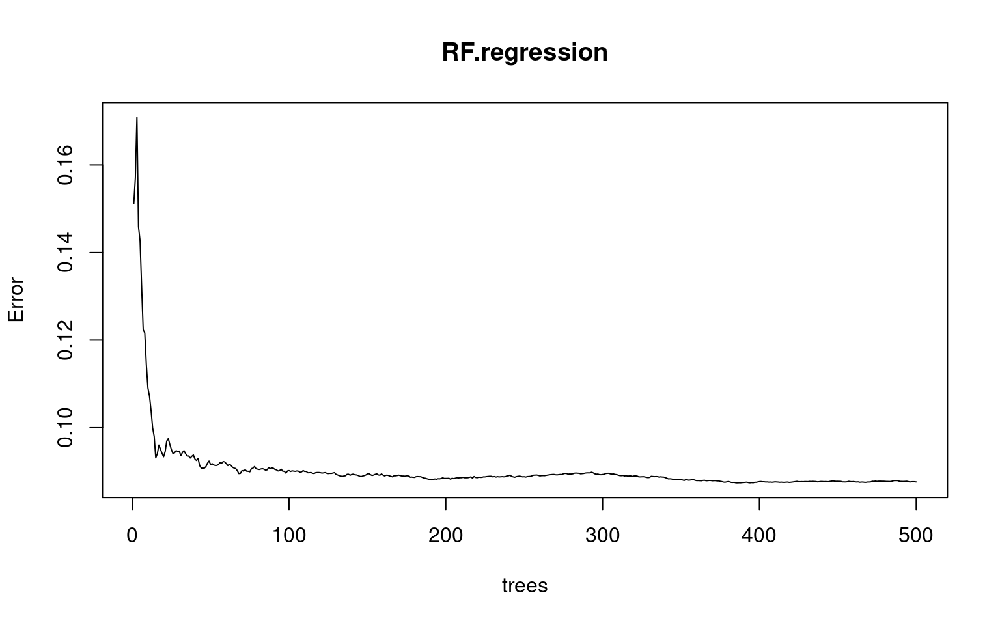
500 trees is reasonable (and default) as we see that the MSE of the random forest model is relatively steady near zero after approximately 200 trees.
Although cross-validation is inherently contained in the random forest method itself, we preform 5-fold cv on the training set to show an example of how the number of variables included selected for each tree affects the error of our folded training data.
# Set Seed for Reproducibility
set.seed(42)
# design matrix necessary to use rfcv() random forest cross-validation function
# https://stackoverflow.com/questions/19760169/how-to-perform-random-forest-cross-validation-in-r
RF.cv <- rfcv(x.train_r, y.train, cv.fold=5)
with(RF.cv, plot(n.var, error.cv))Cross-validation preformed on the training data reveals that varying the number of predictors selected for each split in our random forest model influences the error of the respective random forest models. The plot confirms that prediction errors should be smallest around 10 predictors used for each split. mtry=10 is the number of predictors which we specify in our random forest model, which signifies regression for random forests.
We will use our random forest model RF.regression with mtry=10 and ntree=500 as our final random forest model. Looking at the order of important variables for our random forest regression model:
importance(RF.regression)## %IncMSE IncNodePurity
## X2017_Population_World_Bank 4.8540344 0.4716077
## X2017_Land_Area_km_2 4.4575458 0.4894462
## X2017_GDP_US_Dollars_World_Bank 6.4504134 0.5948727
## CH4 0.7299117 0.4646873
## CO2 13.3887025 1.2106060
## GHG 5.3055282 0.6865832
## NOx 12.2367985 1.0968602
## energy_supply_petajoules 8.0484596 0.6425715
## energy_intensity_2017 1.1932605 0.7189191
## mining_value_2017 4.7086605 0.6678763
## percent_land_agricultural_2013 0.9195357 0.4413896
## nitrogen_consumption 1.9255734 0.3696168
## phosphate_consumption 2.1049518 0.3067271
## potash_consumption -0.4545208 0.3476631
## terrestrial_protected_areas 0.7736914 0.5517956
## protected_areas_marine_terrestrial 7.5043193 0.8397232
## forest_area_2015 9.4113427 1.0514323
## Basel_Convention 2.3663410 0.4635854
## CITES 3.7498311 0.5789265
## Convention_on_Biological_Diversity 1.6146690 0.1872186
## Kyoto__Protocol -0.4049511 0.2593075
## Montreal_Protocol 1.6799875 0.1984064
## Paris_Agreement -0.3544636 0.1363955
## Ramsar_Convention 2.0081781 0.3934344
## Rotterdam_Convention 2.4026399 0.3676204
## Stockholm_Convention -2.7824092 0.2428500
## UN_Convention_on_the_Law_of_the_Sea 2.5547526 0.5178686
## UN_Convention_to_Combat_Desertification 0.5080757 0.2195283
## UN_Framework_Convention_on_Climate_Change 0.7371855 0.1523284
## World__Heritage_Convention 3.3659207 0.4586248varImpPlot(RF.regression, n.var=20)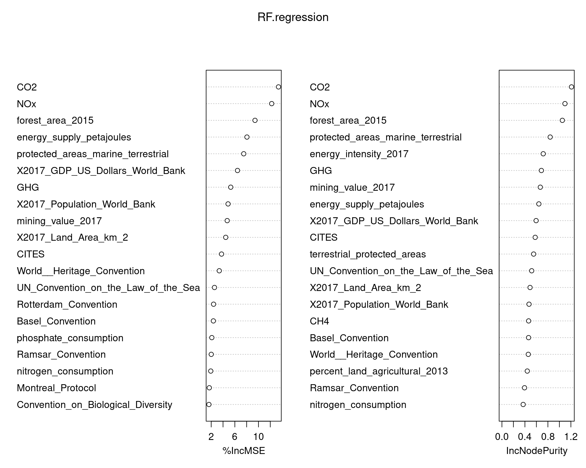
Based on the plot of the importance of variables in our random forests decision making, we note that forest_area_2015, CO2, protected_areas_marine_terrestrial, and NOx are among the top most important variables. This is decided because when these predictors are not included in decision trees, MSE is increased by over 6%. This points to emissions variables and land variables being the most important predictors
Our random forest model is fit to both training and test sets in order to calculate the error of their predictions.
# training MSE
RF.train.pred = predict(RF.regression, newdata=x.train_r)
RF.train.MSE = mean((RF.train.pred - y.train)^2)
# bias
RF.bias = mean(RF.train.pred-y.train)
# test MSE
RF.test.pred = predict(RF.regression, newdata=x.test_r)
RF.test.MSE = mean((RF.test.pred - y.test)^2)Thus, our random forest regression model is has training MSE 0.014923, bias 0.0062562 and test MSE 0.0684004. Hence, our random forest regression model is better fit to the training data than the test data. Both training and test MSE are relatively close to zero, which means that the model has some prediction accuracy on the test set.
We now calculate different metrics of accuracy in order to compare our random forest regression model's performance with other models considered throughout the report.
# Compute and compare test MSE, RMSE, and MAE:
# test mse for RF model on test data
RF.test.pred = predict(RF.regression, newdata=x.test_r)
RF.test.MSE = mean((RF.test.pred - y.test)^2)
# test root mse
RF.test.RMSE = sqrt(RF.test.MSE)
# mean absolute error for RF on test data
RF.MAE = mean(abs(y.test-RF.test.pred))The resulting test errors made by our RF model are:
MSE = 0.0684004
RMSE = 0.2615346
MAE = 0.2034523
The mean absolute error of our random forest regression model is 0.2034523 which is a slightly lower MAE compared to models which we have seen so far. Although, the MAE of our random forest regression model is mediocre in an absolute sense, as is discussed in the results section. MSE is relatively close to zero. Thus their is a positive indication that our random forest model may be able to predict renewable energy percentages with some accuracy.
Finally, we plot the predictions for our random forest model on the test set versus the actual values in order to visualize how well our model preformed.
set.seed(42)
RF.test.pred = as.matrix(predict(RF.regression, newdata=x.test_r))
# Create Data Frame with Countries, Predicted Values snd Actual
RF_predict_graph_data = data.frame(observation = c(1:39),
V1 = RF.test.pred,
actual = y.test,
Country = x.test$Country_Final)
# Specifiy minimum and maxium in each case for plotting
# the line between points
RF_predict_graph_data = RF_predict_graph_data %>%
mutate(min_value_col = pmin(V1,actual)) %>%
mutate(max_value_col = pmax(V1,actual)) %>%
mutate(Abs_Diff = abs(actual-V1))
# Plot the Predictions vs. Actual with difference lines and labels
random_forest_prediction_plot = ggplot(data = RF_predict_graph_data, aes(x = observation, label = Country)) +
geom_point(aes(y = V1, color = 'Predicted')) +
geom_point(aes(y = actual, color='Actual')) +
geom_linerange(aes(ymin = min_value_col, ymax = max_value_col),
col = "blue", linetype = "dashed", alpha = .5) +
geom_text(aes(y = actual), size = 2, vjust = -.5) +
labs(title = "Test Dataset Results for Random Forest Regression Model",
x="Country",y="Renewable Energy 2017 (%)") +
scale_color_manual(name='Renewable % 2017',
breaks=c('Actual', 'Predicted'),
values=c('Actual'='black', 'Predicted'='red')) +
theme(legend.title=element_text(size=20), legend.text=element_text(size=14)) +
theme_minimal()
random_forest_prediction_plotOur random forest regression model has difficulty predicting renewable energy percentage for countries which have relatively high renewable energy percentages (above 50%), but is sightly better at predicting countries with low renewable energy percentages close to zero than models we have seen thus far. Our random forest model only predicts renewable energy percentage values under 50% for our test set, this raises concerns about using a random forest model to best predict our data. It may be difficult to predict high renewable energy percentages due to fewer observations of high renewable energy percentage countries in our model data (skewed distribution).
Model 5: Boosted Trees
Boosted Trees are another popular non-parametric model for prediction. The general principle of boosting is to take a weak learner, i.e. a model that high bias and low variance. A sequential series of learners are fit successively, using the results of the previous learner to fit the next learner. Gradient boosting is a specific type of boosting algorithm in which each successive learner uses the largest residuals \((\hat{y_i}-y_i)\) to fit the next learner. Different models can be fit using a boosting algorithm. Boosting with trees is a popular choice, since a single decision tree is a weak learner, especially when the tree depth is constrained (Walia 2017).
Unlike some other regularized modeling techniques (such as a lasso linear model), a boosted tree has more than one parameter that needs to be considered in trying to fit the optimal model for prediction. The number of trees is one consideration (refered to as \(M\) by Hastie, Tibshirani, and Friedman). The more successive iterations of the tree that are fit, the better the model will match the training data, which can lead to overfitting (see Hastie, Tibshirani, and Friedman 2017, sec. 10.12). Additionally, the number of nodes of the tree, called the depth, exhibits a similar phenomena. The "deeper" each tree is allowed to "grow", the better it will fit the data, leading potentially to overfitting and high variance in the model (the depth is refered to as \(D\)). Typically tree depth is kept small in the case of boosting, since weak learners are desireable for boosting (Walia 2017), (Hastie, Tibshirani, and Friedman 2017, sec. 10.12). Finally, shrinkage can be implemented. Specifically, the weight of a each successive set of residuals used to fit the next tree what is being "shrunk" (Hastie, Tibshirani, and Friedman 2017, sec. 10.12). A shrinkage parameter and the number of trees exhibit a tradeoff in reducing test error, with smaller shrinkage values requiring larger numbers of trees. This is reported to empirically produce better results (see Hastie, Tibshirani, and Friedman 2017, sec. 10.12). The shrinkage term is refered to as \(\nu\) by Hastie, Tibshirani, and Friedman.
Additionally, a loss function must be selected. Computationally, squared error loss (gaussian) is the default in the gbm package (Ridgeway 2020). Absolute losss and t-distribution loss are also available. Other continuous loss functions exist but are not available in gbm, and are likely more computationally expensive anyways (see Hastie, Tibshirani, and Friedman 2017, sec. 10.6).
Therefore, a boosted tree model is fit while attempting to optimize over \(M\), \(D\), and \(\nu\). This is a computationally hard problem, even for a relatively small data set such as the one in this report. Finally, cross validation is also implemented as part of the gbm package.
The gbm package is used in this report to fit a boosted tree model (Ridgeway 2020). The gbm package has the ability to specify \(M\), \(D\), and \(\nu\), implement cross-validation, and choose the loss function. The loss function is set to "gaussian" in the following code and other options were not extensively considered (absolute loss and t distribution loss were tested for a few trials but did not perform better).
The following model used for all of the boosting models. All predictors are considered in the model.
## Model formula.
## y.train instead of renewable_percent 2017
boost_tree_model = y.train ~ X2017_Population_World_Bank + X2017_Land_Area_km_2 + X2017_GDP_US_Dollars_World_Bank +
CH4 + CO2 + GHG + NOx + energy_supply_petajoules + energy_intensity_2017 +
mining_value_2017 + percent_land_agricultural_2013 + nitrogen_consumption + phosphate_consumption +
potash_consumption + terrestrial_protected_areas + protected_areas_marine_terrestrial + forest_area_2015 + Basel_Convention +
CITES + Convention_on_Biological_Diversity + Kyoto__Protocol + Montreal_Protocol + Paris_Agreement + Ramsar_Convention +
Rotterdam_Convention + Stockholm_Convention + UN_Convention_on_the_Law_of_the_Sea + UN_Convention_to_Combat_Desertification +
UN_Framework_Convention_on_Climate_Change + World__Heritage_ConventionGreg Ridgeway, author of the gbm vignette, recommends choosing a very small \(\nu\) and using cross-validation to find the optimal \(M\). Presumably, \(D\) is considered fixed (Ridgeway 2020). Given the small size of the global indicators data set, this report is going to attempt and do something that is usually computationally infeasible: find the model with the smallest CV error by optimizing over a range of \(\nu\), \(D\), and \(M\). \(M\) is maxed out at 1000: some preliminary trials suggested that for various specifications, CV error was usually increased by \(M=1000\). The number of CV folds is set to 10, as is common practice (and optimizing over another parameter would be compuationally intensive).
# set seed for reproducibility
set.seed(42)
# Create a set of values for the shrinkage
lambda = seq(.0005,.01,by=.0005)
# Consider 5 possible depths
depth = c(1,2,3,4,5)# Define a matrix to store the minimum CV Error in each trial
cv_error_vector = matrix(NA,ncol=length(depth),nrow=length(lambda),
dimnames = list(lambda,depth))
# Define a matrix to locate the minimum CV error (i.e. find M)
cv_error_position = matrix(NA,ncol=length(depth),nrow=length(lambda),
dimnames = list(lambda,depth))
# Iterators
i = 1
j = 1
# Start Time
time1 = Sys.time()
# Loop over Nu and D
for(i in 1:length(depth)) {
for(j in 1:length(lambda)) {
# Fit the boosted model
boost_model_optim = gbm(boost_tree_model, data=cbind(y.train,x.train),
cv.folds = 10, train.fraction = 1,
distribution="gaussian", n.trees=1000, interaction.depth=i,
shrinkage = lambda[j])
# Assign the minimum CV error value to the storage vector
cv_error_vector[j,i] = min(boost_model_optim$cv.error)
# Assign the position (M) of the minimum CV to the other vector
cv_error_position[j,i] = which(as.numeric(boost_model_optim$cv.error)==
min(as.numeric(boost_model_optim$cv.error)))
}
}
# End Time
time2 = Sys.time()
time_optim = time2 - time1
# Since this takes a while to run, save out for use so this
# block of code only needs to run once
save(cv_error_vector, file="Model_Output/Optimized_GBM_Errors.Rdata")
save(cv_error_position, file="Model_Output/Optimized_GBM_Positions.Rdata")
save(time_optim, file="Model_Output/Boost_Optim_time.Rdata")
remove(time2,time1)In the above code chunk the boosting tree model was fit for 20 values of \(\nu\) (from .0005 to .01), 5 values of \(D\) (1 to 5), and tree depths of 1000. The results can be loaded in the below code chunk from the Model_Output folder without rerunning the the above code chunk (which may take a few minutes to run).
# Load coss-validation results of above optimizing code chunk
load(file="Model_Output/Optimized_GBM_Errors.Rdata")
load(file="Model_Output/Optimized_GBM_Positions.Rdata")
load(file="Model_Output/Boost_Optim_time.Rdata")
# Get the Indeces of the Optimal Values
Optimal_Params_CV = which(cv_error_vector == min(cv_error_vector), arr.ind=TRUE)
Optimal_lambda = Optimal_Params_CV[1]
Optimal_D = Optimal_Params_CV[2]
# Print the Parameter Values that Minimize CV
paste0("Optimal nu: ",lambda[Optimal_lambda], "; ",
"Optimal D : ",Optimal_D, "; ",
"Optimal M: ", cv_error_position[Optimal_lambda,Optimal_D], "; ",
"Optimal CV error: ", round(min(cv_error_vector),5))## [1] "Optimal nu: 0.008; Optimal D : 3; Optimal M: 560; Optimal CV error: 0.08201"# Print the CV Minimum Errors as a Heat Plot
# Note: This code is based on code from the following source:
# https://datavizpyr.com/heatmap-from-matrix-using-ggplot2-in-r/
graph_cv_error_df = cv_error_vector %>%
as.data.frame() %>%
rownames_to_column("Nu") %>%
pivot_longer(-c(Nu), names_to = "D", values_to = "CV_Error") %>%
mutate(D= fct_relevel(D,colnames(cv_error_vector))) %>%
mutate(Nu = as.numeric(Nu)) %>%
arrange(-Nu)
# Plot
ggplot(data = graph_cv_error_df, aes(x=D, y=Nu, fill=CV_Error)) +
geom_raster() +
scale_fill_viridis_c() +
#scale_y_continuous(breaks = .00001) +
labs(title = "Heatmap of CV Errors Across D and Mu\nMinimum Error Across M") +
theme_minimal()The combination of parameters that minimizes CV error was found to be \(\nu = .008\), \(D = 3\), and \(M = 560\), and the CV error was .08201. The code for the above plot is based on code available at this source: (datavizpyr 2020). The heatmap above shows the matrix of \(\nu\) and \(D\), and the minimum CV error value across all trees \(M\) for each value. Lower minimum CV error values appear more to the right, which corresponds to models with more depth. Interestingly the model with lowest CV error is \(D=3\). The lowest CV Error is not at the low end of \(\nu\) on this range for any \(D\). Ideally more values of \(\nu\) would be tested, but this is computationally expensive. Ultimately, the above graphic suggests that finding optimal parameters is tricky and there is not an easy solution.
# The Number of Trees that minimizes CV Error
kable(cv_error_position)| 1 | 2 | 3 | 4 | 5 | |
|---|---|---|---|---|---|
| 5e-04 | 1000 | 1000 | 999 | 1000 | 1000 |
| 0.001 | 1000 | 1000 | 999 | 1000 | 999 |
| 0.0015 | 1000 | 1000 | 996 | 999 | 997 |
| 0.002 | 994 | 999 | 984 | 998 | 998 |
| 0.0025 | 1000 | 934 | 968 | 957 | 941 |
| 0.003 | 1000 | 870 | 901 | 1000 | 806 |
| 0.0035 | 999 | 890 | 806 | 940 | 663 |
| 0.004 | 997 | 980 | 984 | 970 | 552 |
| 0.0045 | 998 | 929 | 783 | 673 | 734 |
| 0.005 | 961 | 625 | 534 | 802 | 473 |
| 0.0055 | 912 | 514 | 770 | 453 | 639 |
| 0.006 | 899 | 920 | 433 | 482 | 469 |
| 0.0065 | 885 | 470 | 260 | 760 | 316 |
| 0.007 | 996 | 392 | 347 | 207 | 325 |
| 0.0075 | 639 | 274 | 249 | 377 | 539 |
| 0.008 | 643 | 743 | 560 | 483 | 378 |
| 0.0085 | 950 | 390 | 403 | 253 | 312 |
| 0.009 | 770 | 429 | 320 | 373 | 210 |
| 0.0095 | 952 | 384 | 402 | 377 | 217 |
| 0.01 | 818 | 240 | 298 | 249 | 227 |
The above table shows the number of trees that were required to minimize CV error out of 1000 (i.e. the \(M\) with lowest CV error for a given \(D\) and \(\nu\)). Note that the order of the \(\nu\) parameters is ascending instead of descending as in the heat map. For the values in the table at 1000, it is probably that CV error would have been reduced further for the given \(\nu\) and \(D\) if more trees had been allowed. The above emperical evidence supports the \(\nu\), \(M\) tradeoff discussed by Hastie et. al. (Hastie, Tibshirani, and Friedman 2017, sec. 10.12) and Ridgeway (Ridgeway 2020). It also is apparent that a lower \(M\) is required at a specified \(\nu\) as \(D\) increaes to reach a lower cross-validation error. For example, for \(\nu = 0.009\), when \(D=5\) the minimizing \(M\) is 210 but is 320 when \(D=3\). This is expected, as tree with more depth will fit the data better, for a given \(M\) and \(\nu\).
The above results provide evidence that CV Error may be lowered with even smaller values of \(\nu\) but with \(M\) larger than 1000. Ridgeway's (Ridgeway 2020) suggestion is attempted below (pick as small a \(\nu\) as possible and allowing \(M\) to be as large as needed) to study if such a process results in lower CV error that the previous method. \(D\) is set to 1.
# Fit the boosted model Ridgeway Style
set.seed(42)
# Save starting time
time1 = Sys.time()
#run model
boost_model_ridgeway = gbm(boost_tree_model, data=cbind(y.train,x.train),
cv.folds = 10, train.fraction = 1,
distribution="gaussian", n.trees=100000, interaction.depth=1,
shrinkage = .0001)
# Save ending time
time2 = Sys.time()
time_ridgeway = time2 - time1
# Since this takes a while to run, save out for use so this
# block of code only needs to run once
cv_error_ridgeway = boost_model_ridgeway$cv.error
save(cv_error_ridgeway, file="Model_Output/Ridgeway_Errors.Rdata")
save(time_ridgeway, file="Model_Output/Ridgeway_time.Rdata")
remove(time1,time2)The above code only needs to be run once (and the saved vector of erros can be used instead, see the code and the Model_Outputs folder).
# Load coss-validation results of above optimizing code chunk
load(file="Model_Output/Ridgeway_Errors.Rdata")
load(file="Model_Output/Ridgeway_time.Rdata")
# Plot the Cross Validation Errors
ridgeway_df = data.frame(Number_of_Trees = seq(1,100000,by=1),
CV_Error = cv_error_ridgeway)
ggplot(data = ridgeway_df, aes(x = Number_of_Trees, y = CV_Error)) +
geom_line() +
labs(title = "Cross Validation Errors for Ridgeway Boosting Approach\nNu = .0001",
x="M (Number of Trees)",y="CV Error") +
theme(legend.title=element_text(size=20), legend.text=element_text(size=14)) +
theme_minimal()
\(\nu\) of .0001 was chosen, which is 50 times smaller than the value in the first approach. The above process took 34.3920161724091 seconds for a relatively small data set. The optimization problem took 4.47723207871119 minutes. Ultimately, the Ridgeway approach did not achieve as low CV error rate, as can be seen above. The cross validation error did not reduce below 0.0888, whereas for the optimized solution (with the lowest possible \(\nu\) being higher), the CV error was found to be .08201.
Computationally, the Ridgeway approach is faster for a single run as compared to the optimization approach, but when fitting a single model with the optimal parameters resulting from the optimization approach, the single optimal model will be much faster. Both approaches would probably be reasonable here, but given the optimized model performed better in terms of minimizing CV error, it is fit for prediction below:
# Fit the model using the optimized parameters
set.seed(42)
boost_model_prediction = gbm(boost_tree_model, data=cbind(y.train,x.train),
cv.folds = 10, train.fraction = 1,
distribution="gaussian", n.trees=560, interaction.depth=3,
shrinkage = .008)
# CV Error
paste0("Cross Validation Error: ",round(boost_model_prediction$cv.error[560],4))## [1] "Cross Validation Error: 0.0861"The randomness between fits seems to have relatively high impact on the performance: running the optimal model with the same seed in R (but likely from a slightly different starting point in the random number list) results in a CV error of .0861 at \(M=560\). This is still an improvement over the Ridgeway method. But it suggests that choosing the model with lowest CV error might be a computationally expensive task with diminishing returns in predictive power. Non-parametric methods are difficult to evaluate from an inferential standpoint. The relative influence metric is one method for understanding the relationship between predictors and the response for boosting. The relative influence plot for the predictive model is shown below.
# Get Relative Influence for Each Predictor
boost_summary = summary(boost_model_prediction, plotit = FALSE)
boost_relInf_df = data.frame(var = factor(boost_summary$var,
levels=unique(as.character(boost_summary$var))),
infl = boost_summary$rel.inf)
# Plot Results
ggplot(data = boost_relInf_df, aes(x = var, y = infl)) +
geom_col() +
coord_flip() +
labs(title = "Relative Influence Plot for Boosted Tree Model",
y="Relative Influence",x="Predictor") +
theme(legend.title=element_text(size=20), legend.text=element_text(size=14)) +
theme_minimal()
The relative influence measures the "empirical improvement" of splitting a tree on the specificed predictor at a given point, averaged across all the trees in the algorithm (see Hastie, Tibshirani, and Friedman 2017, sec. 2.4). The chart above indicates this boosted tree model found CO2 to be the most important variable, followed by NOx and forest area in 2015. Consumption variables and most treaties and conventions were found to be less important.
# Partial Dependence Plots
partial_dependence_CO2 = plot(boost_model_prediction,i="CO2")
partial_dependence_NOx = plot(boost_model_prediction,i="NOx")
partial_dependence_forest_area = plot(boost_model_prediction,i="forest_area_2015")
partial_dependence_mining_value = plot(boost_model_prediction,i="mining_value_2017")
# Plot in Grid
plot_grid(partial_dependence_CO2,partial_dependence_NOx,
partial_dependence_forest_area,partial_dependence_mining_value,
ncol = 2)Above are partial dependence plots for the predictors with the four highest relative influences. For a partial dependence plot from the gbm package, an upward sloping curve indicates the predictor has positive correlation with the response and a downward sloping curve indicates a negative relationship with the response (Walia 2017). The model is determining that countries with high CO2 and high mining value are likely to have lower renewable energy percentage. The opposite is true for forest area and NOx. Of these four predictors, NOx is a little surprising, as the model suggests that higher NOx emmissions are related to higher renewable energy percentages. It is difficult to tell from such a non-parametric model if this is a real relationship or is a artefact of the model, but is worth exploring more in the future. Besides NOx, the other relationships seem reasonable.
Using the fitted model, prediction is performed below.
# Prediction
boost_tree_pred = predict(boost_model_prediction, newdata = x.test, n.trees=560)
# Calculate Mean Squared Error and Mean Absolute Error
boost_tree_rmse = sqrt(mean((y.test-boost_tree_pred)^2))
boost_tree_mae = mean(abs(y.test-boost_tree_pred))
# Calculate Bias
boost_tree_fit = predict(boost_model_prediction, newdata = x.train, n.trees=560)
boost_tree_bias = mean(boost_tree_fit - y.train)
# Output
paste0("Boosted Tree RMSE: ",round(boost_tree_rmse,4), "; ",
"Boosted Tree MAE: ",round(boost_tree_mae,4), "; ",
"Boosted Tree Bias: ",round(boost_tree_bias,6))## [1] "Boosted Tree RMSE: 0.2767; Boosted Tree MAE: 0.2082; Boosted Tree Bias: 1.4e-05"The RMSE is .2767, the MAE is .2082, and the Bias is approximately 0. The low bias is somewhat concerning, as it suggests the model is still overfit despite extensive use of cross-validation. This may be a feature of the boosting approach, and will be compared to other models in the results section.
The below graph compares predicted values and the test values.
# Create Data Frame with Countries, Predicted Values
# And Actual Values
boost_predict_graph_data = data.frame(observation = c(1:39),
prediction = boost_tree_pred,
actual = y.test,
Country = x.test$Country_Final)
# Specifiy minimum and maxium in each case for plotting
# the line between points
boost_predict_graph_data = boost_predict_graph_data %>%
mutate(min_value_col = pmin(prediction,actual)) %>%
mutate(max_value_col = pmax(prediction,actual)) %>%
mutate(Abs_Diff = abs(actual-prediction))
# Plot the Predictions vs. Actual with difference lines and labels
ggplot(data = boost_predict_graph_data, aes(x = observation, label = Country)) +
geom_point(aes(y = prediction, color = 'Predicted')) +
geom_point(aes(y = actual, color='Actual')) +
geom_linerange(aes(ymin = min_value_col, ymax = max_value_col),
col = "blue", linetype = "dashed", alpha = .5) +
geom_text(aes(y = actual), size = 2, vjust = -.5) +
labs(title = "Test Dataset Results for Boosted Tree Model\n500 Trees",
x="Country",y="Renewable Energy 2017 (%)") +
scale_color_manual(name='Renewable % 2017',
breaks=c('Actual', 'Predicted'),
values=c('Actual'='black', 'Predicted'='red')) +
theme(legend.title=element_text(size=20), legend.text=element_text(size=14)) +
theme_minimal()
Even with a relatively low MAE of .2082, this prediction clearly struggles in certain regards. Almost non of the predictions are above .5, despite about a third of the countries having renewable energy percentages above .5. Some of the other predictions are better than in other models though. For example, the Beta Regression model struggles to predict Palau's low renewable energy percentage, while the boosted tree does a better job. Lesotho continues to be difficult to predict, and may just be an outlier conditional on the available predictors. Values closer to 0 are predicted better than in some of the models.
# Remove environmental objects from this section that
# are unecessary for the remainder of the report
remove(Optimal_Params_CV,Optimal_lambda,Optimal_D,graph_cv_error_df)
remove(depth,lambda,time_optim,time_ridgeway)
remove(cv_error_position,cv_error_vector,cv_error_ridgeway)
remove(ridgeway_df)
remove(boost_summary,boost_relInf_df)
remove(partial_dependence_CO2,partial_dependence_NOx,
partial_dependence_forest_area,partial_dependence_mining_value)
remove(boost_tree_pred,boost_tree_fit)
remove(boost_predict_graph_data,boost_tree_model)Results
The results of the 5 predictive models are summarized in the below table:
# Compile Results into Dataframe
results_df = data.frame(Model = c("LM-Lasso","Beta-Lasso","PC Regression","Random Forest","Boosted Tree"),
RMSE = c(RMSE.l, beta_rmse,pcr_regression_rmse, RF.test.RMSE, boost_tree_rmse),
MAE = c(MAE.l, beta_mae, pcr_regression_mae, RF.MAE,boost_tree_mae),
Bias = c(lasso.bias, beta_bias, pcr_regression_bias, RF.bias, boost_tree_bias))
# Print Table
kable(results_df)| Model | RMSE | MAE | Bias |
|---|---|---|---|
| LM-Lasso | 0.2753095 | 0.2216202 | 0.0000000 |
| Beta-Lasso | 0.2743163 | 0.2137868 | 0.0523705 |
| PC Regression | 0.2755596 | 0.2277978 | 0.0000000 |
| Random Forest | 0.2615346 | 0.2034523 | 0.0062562 |
| Boosted Tree | 0.2767469 | 0.2082045 | 0.0000142 |
The random forest prediction has the lowest RMSE and MAE of the five models. The boosted tree prediction has the next lowest MAE, but actually the highest RMSE. The RMSE for the LM-Lasso, Beta-Lasso, and PC Regression models are very similar, but the MAE of the Beta-Lasso Model is slightly lower.
Well specified tree-based models tend to perform well in prediction, so it is not surprising that the random forest performed best, or that the MAE of the boosted tree model was second best. The difference in rank of RMSE and MAE for the boosted tree model is interesting. One possibility is that the boosted tree model suffered from a few outlier predictions to a more significant degree than the other models (since the squared difference is taken for RMSE but not MAE). Given how low the bias was of the boosted tree fit, it seems possible the model was overfit despite efforts to balance the bias and variance.
The Beta-lasso model performed better than the LM-Lasso model. This suggests the extra effort to fit a more complicated GLM may be worth it, given the response data are percentages.
The PC regression prediction performs worst both for MAE and RMSE, although it is only slightly worse than the LM-Lasso prediction on both metrics of accuracy measured. The main value in the PC Regression ends up being the measurement of percent of variation explained for thee number of principal components used to fit the model. As mentioned in the PC section, the percent of variation in renewable energy percentage that can be explained by the covariates is only 25%, using all the data. This is relatively low, and possibly explains why the MAE of all of these models is large in an absolute sense.
Below is the prediction graph for the Random Forest Model, which was the best at predicting renewable energy percentage in 2017.
# Plot of the best performing prediction
random_forest_prediction_plot
As mentioned in the previous sections, this model performed poorly at predicting countries with high renewable engery percentage, but performed pretty well at predicting percentages below 50% and above 5%. It is not entirely obvious why this occurs, and is likely not unique to the random forest specification, as the boosted tree predictions experience s imilar phenomena. Nor is it due to a difference in training and test sets for renewable energy: it is shown in the testing and training portion of this report that there were about as much high renewable energy percentage countries in the training data as in the test data. One possibility is simply that none of the covariates provide distinguishing information regarding high percentage renewable countries.
The researchers have a hypothesis regarding this last point. Bhutan, Georgia, Lesotho, Ecuador, New Zealand, and Sierra Leone all appear to have significant levels hydroelectric power generation contributing to their overall percentage of energy generation, and their renewable percentage(Wikipedia, n.d.). None of the variables in the limited, cleaned, data set (the one used for modeling) appear to directly relate to hydroelectric capabilities. Such an improvement to the model is discussed in the conclusion.
The MAE was between .20 and .23 for all of the models. This suggests that there was not much difference between the models in predictive capability. In an absolute sense, none did particularly well, although they did better than a completely uninformed predictor would be expected to (as discussed above, the MAE would be expected to be about 33% in the case of an uninformed predictor if the response was distributed uniformly).
Conclusion
Findings and Evaluation of Project Goals
This project was moderately successful in building a model to predict renewable energy percentage for the year 2017. Data cleaning proved a challenge, but a set of 30 predictors were extracted from the Global Environmental Indicators data set and used to fit five models. Given the observations are at the country level, there was a limited amount of data available for analysis. Cross validation was implemented for most of the models since setting aside a separate validation data set would have limited the test and training data even further. Parametric and non-parametric models were developed. The non-parametric models performed slightly better, but the parametric models were more interpretible. The overall prediction error was high for the models, but still somewhat useful. Ultimately, environmental indicators can say something about a countries renewable energy percentage, but are not high quality predictors. As mentioned in the results section, all the fitted models performed relatively well in predicting renewable energy percentages below 50%, but much worse for countries with high renewable energy percentages. With country's transition to renewable energy sources becoming increasingly paramount for the health of our planet and survival of humanity, we would hope to be able to better predict what areas should be focused on in order to increase renewable energy production percentages of all countries. This is still an important question which we would hope to find a more accurate model for in the future. Nonetheless, we are satisfied in that our final random forest model shows some promise of predictive accuracy.
Limitations and Future Work
The Inland Water Resources and Waste data, available from the Global Environmental Indicators data set, were not considered due to the time constraints of this project. Both folders of data have a large number of .csv files. Some countries with poor predictions, as mentioned in the results section, have high levels of renewable energy percentage and have major hydroelectric resources. Including inland water data predictors may vastly improve the predictions. Ideally all predictors from these files would be considered in the same data cleaning, limiting, and interpolation process. If they have sufficient levels of non-missing information, they would be included in the sparsity inducing models used in this report.
The beta regression model relied on the bamlss package to fit the model, and made use of the BIC statistic to optimize the shrinkage parameter. After some searching, the author of this report did not find an R package that implemented cross validation to optimize a shrinkage parameter for a beta regression model. Some sort of extension of the glmnet package for beta regression could be an interesting project. On the other hand, the bamlss package is incredibly powerful and the bayesian approach could provide for some interesting extensions as well. Since the posterior distributions are sampled for the \(\beta's\), it would be feasible to quantify the uncertainty regarding the predictions - i.e., produce a range of potential values for each prediction. If the range included the true value (for posterior interval level), it would provide more evidence the model is predictive.
The boosted tree model was found to have very low bias. This suggested that there was significant overfitting in the final model, even though efforts were made to fit a more general, lower variance model. More time could be spent on optimizing the parameters of this model. An interesting relationship for NOx and renewable energy percentage was observed in the boosted tree model. NOx and GDP were found to be related in the exploratory data analysis. But GDP and renewable energy percentage were not found to be related in the exploratory data analysis. If there is a relationship between NOx and renewable energy percentage, it is likely complex.
Works Cited
Alers, Marcel. 2020. “Five Reasons to Be Optimistic About Clean Energy in 2021.” United Nations Development Programme; Online.
Bhatia, Ruchi. 2021. “Global Environmental Indicators.” UNSD Global Environment Statistics.
Cribari-Neto, Francisco, and Achim Zeileis. n.d. “Beta Regression in R.” Cran.R.
DataBank. n.d. “Data.” World Bank; Online.
datavizpyr. 2020. “Heatmap from Matrix Using Ggplot2 in R.” datavizpyr.com; Online.
Hastie, Trevor, Robert Tibshirani, and Jerome Friedman. 2017. The Elements of Statistical Learning: Data Mining, Inference, and Prediction. 2nd ed. Springer.
Laboratory, National Renewable Energy. 2020. “Palau: Energy Snapshot.” U.S. Department of Energy.
Mangiafico, Salvatore S. 2016. “Beta Regression for Percent and Proportion Data.” Summary; Analysis of Extension Program Evaluation in R.
Ridgeway, Greg. 2020. “Generalized Boosted Models: A Guide to the Gbm Package.” Cran.R.
Umlauf, Nikolaus, Nadja Klein, Thorsten Simon, and Achim Zeileis. 2019. “Bamlss: A Lego Toolbox for Flexible Bayesian Regression (and Beyond).” Universität Innsbruck; Humboldt Universität zu Berlin.
UNSD. 2020. “Renewable Energy Production.” DC2-1516, 2 United Nations Plaza New York, New York 10017, USA: United Nations Statistics Division.
Walia, Anish Singh. 2017. “Gradient Boosting in R.” datascienceplus.com; Online.
Wikipedia. n.d. “List of Countries by Renewable Electricity Production.”